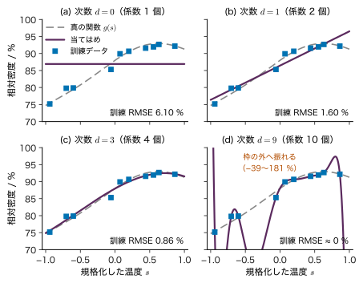
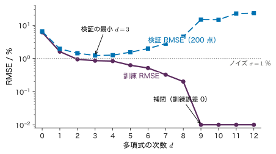
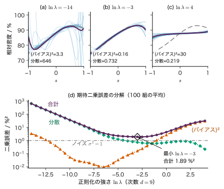
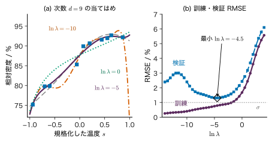
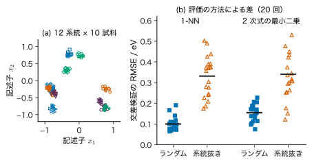
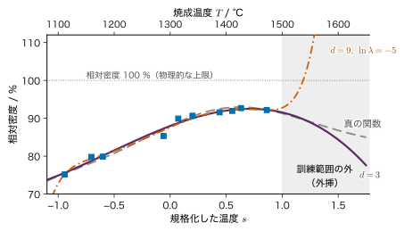

第6章汎化・モデル選択・正則化 — 未知のデータに当たるモデル
- 焼成温度と相対密度の測定 10 点をすべて通る 9 次式は，同じ 10 点を少しずつ外す 3 次式より良いモデルか．訓練データへの当てはまりが完璧なモデルは良いモデルか．
- 同じ焼結体から切り出した試験片や，同じ材料系統の化合物が訓練データと検証データの両方に入っていると，誤差の見積もりはどうなるか．材料データをどう分ければ正直な評価になるか．
- 訓練データの温度範囲（1100〜1500 °C）の外，たとえば 1600 °C での予測を信じてよいか．
焼成温度を変えて焼結体を 10 個作り，相対密度を測ったとする．この 10 点を全部通る曲線は，9 次の多項式を使えば必ず引ける．訓練データでの誤差は 0 である．ところが，その曲線で別の温度の相対密度を予測させると，真の値から 15 % 近く外れ，ときには 100 % を大きく超える「ありえない密度」まで出してくる．一方，10 点を少しずつ外す 3 次式は，別の温度でも 1 % 程度の誤差で当たる．手元のデータに当てはまることと，まだ見ていないデータに当たることは別の性質なのである．
本章では，この「まだ見ていないデータに当たる性質」を汎化（generalization）と呼び，それを数で測り（汎化誤差），モデルの複雑さを選び（モデル選択），複雑なモデルを抑え込む（正則化）方法を学ぶ．中心にあるのは，データを「学習に使う部分」と「評価に使う部分」に分ける考え方である．分け方を誤ると，評価に使うはずの情報が学習に紛れ込み（データ漏洩），性能が実際より良く見える．材料データでは，同じ試料・同じバッチ・同じ材料系統のデータが互いに似ているので，この落とし穴に特に落ちやすい．最後に，訓練範囲の外への外挿，評価指標の読み方，予測と因果の区別を扱う．
- 汎化誤差と訓練誤差を定義し，訓練誤差が汎化誤差より小さく出やすい（楽観的に偏る）理由を不等式と簡単な計算で示せる．
- 多項式の次数を変えたときの訓練誤差と検証誤差の動きから過学習を読み取り，係数が巨大になる理由を説明できる．
- 訓練・検証・テストデータの役割の違いを説明し，テストデータを 1 回しか使わない理由を言える．
- 二乗損失のバイアス–分散分解を，交差項が消える理由を含めて導出できる．
- $K$ 分割交差検証と leave-one-out を手で計算できる．L2 正則化で過学習が抑えられる仕組みと，正則化係数 $\lambda$ の選び方を説明できる．
- 標準化・特徴量選択・欠測の補完・重複試料によるデータ漏洩を見抜き，訓練データだけで fit する正しい手順を書ける．
- 材料データでグループ（系統・試料・バッチ）単位の分割が必要な理由を数値で示せる．外挿と共変量シフト，MAE・RMSE・$R^{2}$ の性質，予測と因果の違いを説明できる．
入門ルートで読む節：6.1，6.2，6.3，6.6，6.7，6.14．「詳しいルート」の印が付いた節は，初めて読むときは飛ばしてよい．
6.1 訓練誤差と汎化誤差 — 手元のデータと未知のデータ
6.1.1 何をしたいのか
機械学習のモデルは，手元のデータ（訓練データ）を使ってパラメーターを決める．しかし，モデルを作る目的は訓練データを再現することではなく，まだ測っていない入力について出力を当てることである．たとえば焼成温度から相対密度を予測するモデルなら，すでに焼いた 10 個の密度を言い当てても役に立たない．役に立つのは，次に焼く温度での密度を当てることである．
そこで，モデルの良さを二つの量で区別する．
- 訓練誤差：訓練データでの予測の外れの平均．手元で計算できる．
- 汎化誤差：訓練データと同じ仕組みで新しく生じるデータでの予測の外れの期待値．本当に知りたいのはこちらだが，未知のデータを使うので直接は計算できない．
小さな数値例：相対密度が標準偏差 $\sigma=1\ \%$ でばらつく焼結体を 10 個測り，標本平均 $\bar{y}$ を予測値とすると，その 10 個での二乗誤差の平均（訓練誤差）の期待値は $0.9\ \%^{2}$，11 個目の新しい試料での期待値（汎化誤差）は $1.1\ \%^{2}$ になる（例題6.1）．手元のデータで測ると誤差は小さく見え，この差はモデルが複雑になるほど大きくなる．
6.1.2 定義と記号
入力 $\bm{x}\in\R^{D}$ と目標値 $y\in\R$ の組 $(\bm{x},y)$ が，ある同時分布 $p(\bm{x},y)$ から独立に生じるとする．訓練データ $\data=\{(\bm{x}_n,y_n)\}_{n=1}^{N}$ はこの分布からの $N$ 個の標本（i.i.d．第2章 2.8）である．モデル $f(\bm{x};\bm{w})$ の予測 $\hat{y}=f(\bm{x};\bm{w})$ が目標値 $y$ からどれだけ外れたかを，損失 $\ell(y,\hat{y})\ge 0$ で測る．回帰では二乗損失 $\ell(y,\hat{y})=(y-\hat{y})^{2}$ を使うことが多い（$y$ が % なら単位は $\%^{2}$）．
定義6.1 汎化誤差と訓練誤差
パラメーター $\bm{w}$ を固定したモデル $f$ の汎化誤差（generalization error，期待損失）を
\begin{equation} \begin{aligned} R(f)&=\Ex_{(\bm{x},y)\sim p}\bigl[\ell\bigl(y,f(\bm{x})\bigr)\bigr]\\ &=\iint \ell\bigl(y,f(\bm{x})\bigr)\\ &\qquad\times p(\bm{x},y)\,\dd\bm{x}\,\dd y \end{aligned} \label{eq:6-genrisk} \end{equation}と定義する．期待値は，訓練データとは独立に新しく生じる 1 組 $(\bm{x},y)$ についてとる．一方，訓練誤差（training error，経験損失）は
\begin{equation} \hat{R}(f)=\frac{1}{N}\sum_{n=1}^{N}\ell\bigl(y_n,f(\bm{x}_n)\bigr) \label{eq:6-emprisk} \end{equation}である．二乗損失のとき $\hat{R}$ は平均二乗誤差（MSE）で，その平方根を RMSE（root mean squared error）という．
式 \eqref{eq:6-emprisk} は，$f$ がデータと無関係に決まっているなら，式 \eqref{eq:6-genrisk} の不偏な推定値である（$\Ex[\hat{R}(f)]=\frac1N\sum_n\Ex[\ell(y_n,f(\bm{x}_n))]=R(f)$．期待値の線形性，第2章 2.5）．問題は，学習では $f$ を同じデータ $\data$ を使って選ぶことにある．
6.1.3 訓練誤差は楽観的に偏る
モデルの候補の集まり（たとえば「3 次以下の多項式すべて」）を $\mathcal{F}$ と書く．学習は，訓練誤差を最小にする候補
$$ \hat{f}_{\data}=\argmin_{f\in\mathcal{F}}\hat{R}(f) $$を選ぶことである（$\hat{f}_{\data}$ はデータ $\data$ に依存するので添字を付けた）．また，汎化誤差を最小にする候補を $f^{\ast}=\argmin_{f\in\mathcal{F}}R(f)$ とする．$f^{\ast}$ は分布 $p$ だけで決まり，データには依存しない．
定理6.1 訓練誤差の期待値は汎化誤差の期待値を超えない
上の設定で，データ $\data$ の出方についての期待値を $\Ex_{\data}$ と書くと
$$ \Ex_{\data}\bigl[\hat{R}(\hat{f}_{\data})\bigr]\ \le\ R(f^{\ast})\ \le\ \Ex_{\data}\bigl[R(\hat{f}_{\data})\bigr] . $$証明
(i) $\hat{f}_{\data}$ は $\mathcal{F}$ の中で訓練誤差が最小なので，同じ $\mathcal{F}$ に属する $f^{\ast}$ と比べて，どのデータ $\data$ についても $\hat{R}(\hat{f}_{\data})\le\hat{R}(f^{\ast})$ が成り立つ．両辺の $\Ex_{\data}$ をとると $\Ex_{\data}[\hat{R}(\hat{f}_{\data})]\le\Ex_{\data}[\hat{R}(f^{\ast})]$．
(ii) $f^{\ast}$ はデータに依存しないので，6.1.2 項で見たとおり $\Ex_{\data}[\hat{R}(f^{\ast})]=R(f^{\ast})$．(i) と合わせて左側の不等号が出る．
(iii) $f^{\ast}$ は汎化誤差が最小なので，どの $\data$ についても $R(f^{\ast})\le R(\hat{f}_{\data})$．両辺の $\Ex_{\data}$ をとると右側の不等号が出る．
（証明終わり）
つまり，学習に使ったデータで測った誤差は，平均すると，新しいデータでの誤差より小さい．訓練誤差は汎化誤差の「楽観的な」見積もりであり，その差（楽観の度合い）はモデルが訓練データの偶然のばらつきにどれだけ合わせられるかで決まる．どれだけ小さく出るかは，次の線形モデルの計算で具体的に分かる．
例題6.1 標本平均で予測するときの訓練誤差と汎化誤差
相対密度 $y_1,\dots,y_N$ が i.i.d. で $\Ex[y_n]=\mu$，$\Var[y_n]=\sigma^{2}$ とする．モデルは定数 $f=\bar{y}=\frac1N\sum_n y_n$（標本平均）である．(1) 訓練誤差 $\hat{R}=\frac1N\sum_n(y_n-\bar{y})^{2}$ の期待値を求めよ．(2) 新しい試料 $y$（$y_1,\dots,y_N$ と独立で同じ分布）での二乗誤差 $(y-\bar{y})^{2}$ の期待値を求めよ．(3) $N=10$，$\sigma=1\ \%$ のときの値を求めよ．
解答 (1) $\hat{R}$ は分散の最尤推定値 $\sigma^{2}_{\mathrm{ML}}$ と同じ式であり，第4章 4.2 で示したとおり $\Ex[\hat{R}]=\dfrac{N-1}{N}\sigma^{2}$．ここでも 1 行ずつ確かめる．$y_n-\bar{y}=(y_n-\mu)-(\bar{y}-\mu)$ と分けて二乗し和をとると，$\sum_n(y_n-\mu)=N(\bar{y}-\mu)$ を使って
$$ \begin{aligned} &\sum_{n}(y_n-\bar{y})^{2}\\ &=\sum_{n}(y_n-\mu)^{2}-2(\bar{y}-\mu)\sum_{n}(y_n-\mu)\\ &\qquad+N(\bar{y}-\mu)^{2}\\ &=\sum_{n}(y_n-\mu)^{2}-N(\bar{y}-\mu)^{2} . \end{aligned} $$期待値をとると，$\Ex[(y_n-\mu)^{2}]=\sigma^{2}$，$\Ex[(\bar{y}-\mu)^{2}]=\Var[\bar{y}]=\sigma^{2}/N$（第2章 2.8）より $\Ex[\sum_n(y_n-\bar{y})^{2}]=N\sigma^{2}-\sigma^{2}=(N-1)\sigma^{2}$．$N$ で割って $\Ex[\hat{R}]=\frac{N-1}{N}\sigma^{2}$．
(2) $y-\bar{y}=(y-\mu)-(\bar{y}-\mu)$ で，新しい $y$ は $\bar{y}$ と独立なので交差項の期待値は $-2\,\Ex[y-\mu]\,\Ex[\bar{y}-\mu]=0$．よって $\Ex[(y-\bar{y})^{2}]=\sigma^{2}+\sigma^{2}/N=\frac{N+1}{N}\sigma^{2}$．
(3) $N=10$，$\sigma^{2}=1\ \%^{2}$ で，訓練誤差の期待値 $0.9\ \%^{2}$，汎化誤差 $1.1\ \%^{2}$．パラメーターが 1 個（$\bar{y}$）だけでも，訓練誤差は $\sigma^{2}/N$ だけ小さく，汎化誤差は $\sigma^{2}/N$ だけ大きい．
例題6.1 の結果は，$M$ 個の基底関数を持つ線形モデル（多項式なら次数 $d$ で $M=d+1$）に一般化できる．入力 $\bm{x}_1,\dots,\bm{x}_N$ を固定し（同じ入力で測り直す状況），真の関数がモデルで表せ，ノイズが独立で分散 $\sigma^{2}$ のとき，
\begin{equation} \begin{aligned} \Ex\bigl[\hat{R}_{\mathrm{tr}}\bigr]&=\sigma^{2}\Bigl(1-\frac{M}{N}\Bigr),\\ \Ex\bigl[R_{\mathrm{new}}\bigr]&=\sigma^{2}\Bigl(1+\frac{M}{N}\Bigr) \end{aligned} \label{eq:6-optimism} \end{equation}となる．$\hat{R}_{\mathrm{tr}}$ は訓練の二乗誤差の平均，$R_{\mathrm{new}}$ は同じ入力で測り直した新しい測定に対する二乗誤差の平均である（$\bm{H}=\bm{\Phi}(\bm{\Phi}^{\tp}\bm{\Phi})^{-1}\bm{\Phi}^{\tp}$ の性質を使う導出は演習6.1 で行う）．$M=1$（定数）なら例題6.1 に一致する．パラメーターの数 $M$ がデータ数 $N$ に近づくと，訓練誤差は 0 に，汎化誤差は $2\sigma^{2}$ に近づく．$M$ 個の係数が，ノイズを $M$ 個分「覚えて」しまうからである．
6.2 過学習を見る — 多項式の次数を上げる
6.2.1 データ A と多項式モデル
本書で回帰の例に使うデータ A「焼成温度と相対密度」（教育用の合成データ．実在の物質のデータではない）を使う．焼成温度 $T\in[1100,1500]$ °C を $s=(T-1300\ ^{\circ}\mathrm{C})/(200\ ^{\circ}\mathrm{C})\in[-1,1]$ と規格化し，真の関数を
\begin{equation} g(s)=88+8s-5s^{2}+2\sin 3s \label{eq:6-dataA} \end{equation}とする（単位は相対密度の %）．観測は $y=g(s)+\varepsilon$，$\varepsilon\sim\Normal(0,\sigma^{2})$，$\sigma=1.0\ \%$ である．$s$ を $[-1,1]$ の一様分布から 10 点引き（乱数の seed 20261112），これを訓練データとする．検証のために，同じ分布から別に 200 点を引く（シミュレーター6.1 と同じ乱数列なので，画面と同じ数値になる）．
モデルは次数 $d$ の多項式
\begin{equation} \begin{aligned} f(s;\bm{w})&=88+w_0+w_1 s\\ &\qquad+\dots+w_d s^{d}\\ &=88+\sum_{j=0}^{d}w_j\phi_j(s) \end{aligned} \label{eq:6-poly} \end{equation}である（基底関数は $\phi_j(s)=s^{j}$）．係数は $w_0,\dots,w_d$ の $M=d+1$ 個，$\bm{w}\in\R^{M}$．定数 88 % は目標値の基準として固定した値で，係数は目標値 $y-88\ \%$ に当てはめる（データから計算した値ではない．こうしておくと，6.6 節の正則化で係数を 0 に引き寄せたとき，曲線が 88 % の水平線に近づく）．係数は訓練誤差（二乗和）を最小にするように決める（最小二乗法．解き方は第8章 8.2）．
6.2.2 次数を 0，1，3，9 と上げる
次数の組 0，1，3，9 は，Bishop (2006) の 1.1 節の多項式曲線フィッティングの例に倣って選んだ（データ・真の関数・題材は本書独自のものである）．

図6.1 を左上から見ていく．
- $d=0$（定数）：温度による変化をまったく表せない．訓練データにも合わない（訓練 RMSE 6.10 %）．このように，モデルが単純すぎて訓練データの傾向すら捉えられない状態を未学習（underfitting）という．
- $d=1$（直線）：右上がりの傾向は捉えたが，高温側で密度が頭打ちになる曲がりを表せない（1.60 %）．
- $d=3$：真の関数とほぼ重なる．訓練 RMSE 0.86 % はノイズの標準偏差 1.0 % より少し小さい（式 \eqref{eq:6-optimism} で $M=4$，$N=10$ なら訓練の二乗誤差の期待値は $\sigma^{2}\times0.6$，RMSE にして約 0.77 % である）．
- $d=9$：係数が 10 個，点も 10 個なので，10 点すべてを通る多項式が 1 つだけ存在する（補間）．訓練 RMSE は 0（計算機の丸め誤差の $10^{-13}$ 程度）だが，点と点の間で曲線が激しく振れ，相対密度 −39 % や 181 % という物理的にありえない値まで出す．
$d=9$ の曲線は訓練データのノイズまで覚えてしまった．訓練データへの当てはまりは良くなるのに，新しいデータへの予測は悪くなる現象を過学習（overfitting）という．
定義6.2 過学習と未学習
モデルの複雑さ（多項式なら次数 $d$）を上げると訓練誤差は下がり続けるが，汎化誤差はある所から上がり始める．汎化誤差が上がり始めた後の，訓練誤差が小さいのに汎化誤差が大きい状態を過学習，モデルが単純すぎて訓練誤差も汎化誤差も大きい状態を未学習という．
6.2.3 訓練 RMSE と検証 RMSE を次数に対して描く
汎化誤差は直接は計算できないが，訓練に使わなかった 200 点（検証データ）での RMSE で見積もれる．訓練データを固定して次数 $d$ を 0 から 12 まで変え，訓練 RMSE と検証 RMSE を並べたのが図6.2 と表6.1 である．

| 次数 $d$ | 係数の数 $M$ | 訓練 RMSE / % | 検証 RMSE / % | $\max_j\abs{w_j}$ | $\bm{\Phi}$ の条件数 |
|---|---|---|---|---|---|
| 0 | 1 | 6.10 | 6.48 | 1.09 | 1 |
| 1 | 2 | 1.60 | 1.95 | 10.1 | 1.72 |
| 2 | 3 | 0.938 | 1.44 | 9.53 | 4.08 |
| 3 | 4 | 0.855 | 1.23 | 11.2 | 9.35 |
| 5 | 6 | 0.623 | 1.54 | 35.5 | 87.1 |
| 7 | 8 | 0.324 | 2.79 | 202 | 648 |
| 9 | 10 | $\approx 0$ | 14.8 | $3.16\times10^{3}$ | $2.33\times10^{4}$ |
訓練 RMSE は次数とともに単調に下がる（次数 $d$ の多項式の集まりは次数 $d-1$ の集まりを含むので，最小の訓練誤差が増えることはない）．一方，検証 RMSE は $d=3$ で最小の 1.23 % になり，$d=9$ では 14.8 % と 1 桁以上悪くなる．検証 RMSE はノイズの標準偏差 1 % より小さくならないことにも注意する．新しい測定に含まれるノイズは，どんなモデルでも予測できないからである（6.4 節の「ノイズ」の項）．
6.2.4 過学習すると係数が巨大になる
表6.1 の右から 2 列目のとおり，次数を上げると係数の最大の絶対値が急に大きくなる．$d=3$ と $d=9$ の係数を表6.2 に並べる．
| $j$ | 0 | 1 | 2 | 3 | 4 | 5 | 6 | 7 | 8 | 9 |
|---|---|---|---|---|---|---|---|---|---|---|
| $d=3$ | −0.046 | 11.2 | −4.74 | −2.90 | — | — | — | — | — | — |
| $d=9$ | 0.058 | 37.0 | −169 | 133 | 901 | −1455 | −1516 | 3164 | 768 | −1989 |
$d=9$ の係数は数百〜数千で，正負が交互に並ぶ．$s\in[-1,1]$ では $\abs{s^{j}}\le1$ なので，各項は最大で数千 % にもなるが，巨大な正の項と負の項が打ち消しあって，訓練データの 10 点ではちょうど観測値（75〜93 %）になる．打ち消しあいは訓練データの点でだけ成り立つように調整されているので，点と点の間では打ち消しが崩れて曲線が大きく振れる．係数が巨大になることは過学習の目印であり，6.6 節の正則化はこの目印そのものに罰則をかける．
表6.1 の最後の列の条件数（第8章 8.5）は，データのわずかな変化が係数をどれだけ動かしうるかを表し，$d=9$ では $2.33\times10^{4}$ である．これは 6.4 節で「分散」として測る量の別の見え方である．
例題6.2 3 点を通る 2 次式とノイズへの敏感さ
規格化した温度 $s=-1,0,1$ で相対密度 $y=76.0,\ 88.5,\ 91.0\ \%$ を得た（教育用の数値例）．(1) 3 点をすべて通る 2 次式 $f(s)=a+bs+cs^{2}$ を求めよ．(2) 直線 $f(s)=a'+b's$ を最小二乗法で当てはめ，訓練 RMSE を求めよ．(3) $s=1$ の測定値だけがノイズで $+1\ \%$ ずれて $92.0\ \%$ だったら，(1) の 2 次式の $s=0.5$ と $s=2$ での値はそれぞれいくら変わるか．
解答 (1) $f(0)=a=88.5$．$f(1)=a+b+c=91.0$，$f(-1)=a-b+c=76.0$．2 式の差から $2b=15.0$，$b=7.5$．和から $2a+2c=167.0$，$c=83.5-88.5=-5.0$．よって $f(s)=88.5+7.5s-5.0s^{2}$．3 点を通るので訓練誤差は 0 である．
(2) $s$ の平均は 0 なので，最小二乗の直線は傾き $b'=\sum_n s_n y_n\big/\sum_n s_n^{2}$ $=(-76.0+91.0)/2=7.5$，切片 $a'=\bar{y}=(76.0+88.5+91.0)/3=85.17$．当てはめ値は $77.67,\ 85.17,\ 92.67$ で，残差は $-1.67,\ 3.33,\ -1.67$．訓練 RMSE は $\sqrt{(2.78+11.11+2.78)/3}$ $=\sqrt{5.56}\approx2.36\ \%$．
(3) $f(1)$ の式だけが $+1$ ずれるので，(1) の連立方程式で $a$ は変わらず，$b+c$ が $+1$，$-b+c$ は不変．よって $b$ と $c$ がそれぞれ $+0.5$ 変わる．$s=0.5$ での変化は $0.5\times0.5+0.5\times0.25=0.375\ \%$，$s=2$ では $0.5\times2+0.5\times4=3.0\ \%$．1 点のノイズ $1\ \%$ が，データの外（$s=2$）では 3 倍に増幅されて予測に出る．点を通るモデルほどノイズに振り回されやすく，その影響は点から離れるほど大きい．
シミュレーター6.1 多項式回帰と正則化
データ A の訓練データに多項式を当てはめ，次数・データ数・正則化の強さを変えたときの訓練 RMSE・検証 RMSE・係数の大きさを確かめる装置である．装置の目標値も本文と同じく $y-88\ \%$ で，正則化（6.6 節）は定数項 $w_0$ を含む全係数にかける簡略化をしている．
操作と観察
- 開いた直後の既定（訓練データ数 $N=10$，ノイズの標準偏差 1.0 %，多項式の次数 $d=3$，「正則化なし（λ = 0，最小二乗法）」にチェック，乱数の seed 20261112）のまま読み出しを見る → 訓練 RMSE 0.855 %，検証 RMSE（200 点）1.23 %，下の図に「検証の最小：d = 3」と出る．係数の表は表6.2 の $d=3$ の行と一致する．
- 「多項式の次数 d」を 0，1，9 と動かす → 訓練 RMSE と検証 RMSE が表6.1 の値になる．$d=9$ では訓練 RMSE がほぼ 0，検証 RMSE 14.8 %，図に赤字で「当てはめは枠の外まで振れています（−39.2〜181 %）」，$\max_j\abs{w_j}$ が 3160（$3.16\times10^{3}$），$\bm{\Phi}$ の条件数が 23300（$2.33\times10^{4}$）になる．式 \eqref{eq:6-optimism} で $M=N$ のとき訓練誤差 0 となることと比べる．
- $d=9$ のまま「訓練データ数 N」を 20，50 に増やす → 検証 RMSE が 5.25 %，1.13 % と下がる（同じ seed なら最初の 10 点は変わらない）．$d=3$ に戻すと，$N=10,20,50$ で 1.23，1.24，1.11 % とほとんど変わらない．
- $N=10$，$d=9$ に戻し，「正則化なし」のチェックを外して「正則化の強さ ln λ」を −10，−5，0 と動かす → 検証 RMSE が 2.40，1.31，2.43 %，$\max_j\abs{w_j}$ が 75.0，12.8，5.89 になる．6.6 節の式 \eqref{eq:6-ridge} と図6.6 と比べる．seed を変えてしまったら「同じ seed でやり直す」ではなく「既定に戻す」で 20261112 に戻す．
操作後の問い
- 手順 2 で $d=9$ の訓練 RMSE がほぼ 0 になるのはなぜか．$d=10,11,12$ ではどうなり，画面にどんな注意が出るか．
答えの例
係数が $d+1=10$ 個で訓練データも 10 点なので，計画行列 $\bm{\Phi}$ が 10×10 の正則な行列になり，10 点すべてを通る多項式がちょうど 1 つ決まる（補間）．$d\ge10$ では係数の数がデータ数を上回り，訓練誤差 0 の解が無数にある．装置は係数の二乗和が最小の解（最小ノルム解）を表示し，その旨と「条件数 ∞（列が足りない）」を示す．検証 RMSE は 14.7〜23.1 % で，どれも $d=3$ の 1.23 % よりはるかに悪い．
- 手順 4 で ln λ を 0 まで大きくすると，検証 RMSE が再び悪くなるのはなぜか．
答えの例
罰則 $\frac{\lambda}{2}\norm{\bm{w}}^{2}$ が強すぎると係数がすべて 0 の側に引き寄せられ，曲線が 88 % の水平線に近づいて，真の関数の曲がりまで表せなくなる（未学習）．訓練 RMSE も 1.68 % まで上がっていることから，データに合わせる力そのものが落ちたと分かる．6.4 節の言葉では「バイアスが増えた」状態である．
6.3 訓練・検証・テストデータの役割
6.3.1 三つに分ける理由
6.2 節では，検証データで RMSE を測り，それが最小になる次数 $d=3$ を選んだ．このように，学習の前に人が決める量（多項式の次数，6.6 節の正則化係数 $\lambda$ など．ハイパーパラメーターという）やモデルの種類を，データに基づいて選ぶことをモデル選択（model selection）という．
ここで注意が要る．13 通りの次数の中から検証 RMSE が最小のものを選んだのだから，選ばれた $d=3$ の検証 RMSE 1.23 % も，定理6.1 と同じ理由で少し楽観的になっている．検証データは「どの次数にするか」という選択に使われたので，もはや選ばれたモデルにとって完全に「未知のデータ」ではない．そこで，データを三つに分ける（図6.3）．
定義6.3 訓練データ・検証データ・テストデータ
- 訓練データ（training data）：パラメーター $\bm{w}$ を決める（損失を最小にする）のに使う．
- 検証データ（validation data）：ハイパーパラメーターとモデルの種類を選ぶのに使う．候補ごとに，訓練データで学習したモデルの誤差を検証データで測り，比べる．
- テストデータ（test data）：すべての選択が終わった後に，最終的なモデルの汎化誤差を見積もるのに1 回だけ使う．テストの結果を見てモデルを選び直してはいけない．
テストデータを 1 回しか使わない理由は，検証データで起きた楽観の偏りを再び起こさないためである．テストの結果を見て「やはり次数 4 にしよう」と選び直せば，テストデータは検証データの一部になり，もはや偏りのない見積もりではなくなる．論文や報告で示す汎化誤差は，選択に一度も使っていないデータで測った値でなければならない．
6.3.2 最小の値を選ぶと楽観的になる
検証での選択がどのくらい楽観的になるかを，最も簡単な場合で見積もる．
例題6.3 同じ実力の 2 つのモデルから良い方を選ぶ
モデル A と B の本当の汎化誤差（平均二乗誤差）がどちらも $1.00$ だとする．検証データで測った値はそれぞれ真の値のまわりに標準偏差 $0.10$ でばらつき，互いに独立な Gauss 分布に従うとする．検証の値が小さい方を選び，その検証の値を性能として報告すると，報告値の期待値はいくらになるか．独立で同じ分布 $\Normal(\mu,s^{2})$ に従う 2 つの量の小さい方の期待値は $\mu-s/\sqrt{\pi}$ である（演習6.8 で導く）．
解答 $\mu=1.00$，$s=0.10$ を代入して $1.00-0.10/\sqrt{\pi}$ $=1.00-0.10/1.7725$ $=1.00-0.0564\approx0.944$．どちらを選んでも本当の汎化誤差は $1.00$ なのに，報告値は平均して約 6 % 小さく出る．候補を増やすほど偏りは大きくなる（同じ設定で候補が 20 個なら，数値計算で期待値は約 $0.81$ になる）．多くのハイパーパラメーターを検証データで試した後には，別に取っておいたテストデータでの評価が欠かせない．
6.3.3 分け方の目安
データが数千点以上あれば 60:20:20 や 80:10:10 に分けるのが普通である．材料実験のようにデータが数十点しかないと，検証データで測った誤差自体が大きくばらつくので，6.5 節の交差検証で同じデータを訓練と検証に交代で使う．分け方は「訓練に使えなかった状況を再現する」ように決める．ランダムに分けてよいのは，データが互いに独立で，将来のデータも同じ分布から来るときだけである（同じ試料・同じ系統のデータは 6.8 節，時間とともに条件が変わるデータは第22章 22.10）．
6.4 バイアス–分散分解詳しいルート
6.4.1 同じ条件のデータ集合を何組も考える
6.2 節の過学習を，「データの偶然に左右される度合い」として数で表す．訓練データ $\data$ は確率的に生じるので，同じ条件（同じ温度範囲，同じ点数 $N$，同じノイズ）でもう一度実験すれば別のデータ集合が得られ，当てはめた曲線も変わる．そこで，データ集合の出方についての期待値 $\Ex_{\data}$ を考える．入力 $x$ を 1 つ固定し（多項式の例では規格化した温度 $s$），
- $\hat{f}(x;\data)$：データ集合 $\data$ で学習したモデルの，$x$ での予測値．
- $\bar{f}(x)=\Ex_{\data}[\hat{f}(x;\data)]$：予測値の，データ集合の出方についての平均．
- $g(x)$：真の関数（ノイズを除いた値）．新しい観測は $y=g(x)+\varepsilon$，$\Ex[\varepsilon]=0$，$\Var[\varepsilon]=\sigma^{2}$ で，$\varepsilon$ は $\data$ と独立．
6.4.2 分解の導出
定理6.2 二乗損失のバイアス–分散分解
入力 $x$ を固定したとき，新しい観測 $y$ に対する予測の二乗誤差の期待値（データ集合 $\data$ と新しいノイズ $\varepsilon$ の両方についての期待値）は，次の 3 項の和になる．
導出
記号を短くするため $\hat{f}=\hat{f}(x;\data)$，$\bar{f}=\bar{f}(x)$，$g=g(x)$ と書く．誤差を三つに分ける．
$$ y-\hat{f}=\underbrace{(g-\bar{f})}_{a}+\underbrace{(\bar{f}-\hat{f})}_{b}+\underbrace{\varepsilon}_{c} . $$$a$ は定数（$\data$ にも $\varepsilon$ にも依存しない），$b$ は $\data$ だけに依存し，$c$ は新しいノイズだけに依存する．二乗を展開すると
$$ (y-\hat{f})^{2}=a^{2}+b^{2}+c^{2}+2ab+2ac+2bc . $$各項の期待値をとる．
- $\Ex[a^{2}]=(g-\bar{f})^{2}$（定数なのでそのまま）．
- $\Ex[b^{2}]=\Ex_{\data}[(\hat{f}-\bar{f})^{2}]$（分散の定義そのもの）．
- $\Ex[c^{2}]=\Ex[\varepsilon^{2}]=\Var[\varepsilon]+(\Ex[\varepsilon])^{2}=\sigma^{2}$．
- $\Ex[2ab]=2a\,\Ex_{\data}[\bar{f}-\hat{f}]$ $=2a\,(\bar{f}-\Ex_{\data}[\hat{f}])$ $=2a\,(\bar{f}-\bar{f})=0$．$\bar{f}$ が $\hat{f}$ の平均として定義されているので消える．
- $\Ex[2ac]=2a\,\Ex[\varepsilon]=0$．ノイズの平均が 0 なので消える．
- $\Ex[2bc]=2\,\Ex_{\data}[b]\,\Ex[\varepsilon]=0$．新しいノイズ $\varepsilon$ が訓練データ $\data$ と独立なので積の期待値が期待値の積になり（第2章 2.5），さらに両方とも 0 である．
残る 3 項が式 \eqref{eq:6-bv} である．
（導出終わり）
式 \eqref{eq:6-bv} は 1 点 $x$ での式である．入力全体での汎化誤差は，両辺を入力の分布 $p(x)$ で平均すればよい（以下 $\langle\cdot\rangle_x$ と書く）．
(バイアス)² は平均的な予測が真の関数からずれている量（モデルが単純すぎると大きい），分散はデータ集合が変わったときの予測の揺れ（モデルが柔軟すぎてノイズに合わせると大きい），ノイズ $\sigma^{2}$ はどんなモデルでも減らせない新しい観測そのものの揺れ（第4章 4.8 の偶然的不確かさ）である．
モデルを複雑にする（次数を上げる，正則化を弱める）とバイアスが減って分散が増え，単純にするとその逆になる．このバイアスと分散の兼ね合い（bias–variance trade-off）のため，汎化誤差は複雑さの中ほどで最小になる．
6.4.3 多数の合成データ集合で確かめる
合成データなら，同じ条件のデータ集合を何組でも作れる．データ A から $N=15$ 点のデータ集合を $L=100$ 組引き（乱数の seed 20261112 の 1 本の乱数列から順に），組ごとに次数 $d=9$ の多項式を 6.6 節の正則化つきで当てはめた結果が図6.4 である（$L$ は組の数で，損失 $L(\bm{w})$ とは別の記号である）．$l$ 組目の当てはめを $f^{(l)}(s)$ として，
\begin{equation} \begin{aligned} \bar{f}(s)&=\frac{1}{L}\sum_{l=1}^{L}f^{(l)}(s),\\ (\text{バイアス})^{2}&=\Bigl\langle\bigl(\bar{f}(s)-g(s)\bigr)^{2}\Bigr\rangle_{s},\\ \text{分散}&=\Bigl\langle\frac{1}{L}\sum_{l=1}^{L}\bigl(f^{(l)}(s)\\ &\qquad\quad-\bar{f}(s)\bigr)^{2}\Bigr\rangle_{s} \end{aligned} \label{eq:6-bv-est} \end{equation}で見積もる．$\langle\cdot\rangle_s$ は $s\in[-1,1]$ の一様分布での平均（訓練データの $s$ と同じ分布）で，200 点の中点則で計算した．

$\ln\lambda=-14$（ほぼ正則化なし）では細線が大きく散らばり分散は $646\ \%^{2}$，$\ln\lambda=4$（強い正則化）では細線はそろう（分散 $0.219\ \%^{2}$）がどれも 88 % の水平線に近く，(バイアス)² が $30.1\ \%^{2}$ になる．合計は $\ln\lambda=-3$ で最小の $0.161+0.732+1.00=1.89\ \%^{2}$（RMSE にして 1.38 %）であり，その左では分散が，右ではバイアスが支配する．
(バイアス)² の見積もりには，有限の $L$ 組から $\bar{f}$ を求めたことによる誤差（大きさは分散 $/L$ 程度）が含まれる．分散が数百もある $\ln\lambda=-14$ 付近の (バイアス)² の値はあまり信用できない．
シミュレーター6.2 バイアスと分散
同じ条件のデータ集合を $L$ 組作って当てはめを重ね，(バイアス)²・分散・ノイズとその合計が，正則化の強さや次数でどう変わるかを確かめる装置である．画面の記号は本文と同じく，$l$ 組目の当てはめを $f^{(l)}(s)$，組の数を $L$ と書く．
操作と観察
- 開いた直後の既定（横軸「ln λ（次数 d を固定）」，多項式の次数 $d=9$，正則化の強さ ln λ = −3.0，1 組の訓練データ数 $N=15$，ノイズの標準偏差 1.0 %，データ集合の数 $L=100$，seed 20261112）で計算が終わるのを待つ → 読み出しが (バイアス)² 0.161 %²，分散 0.732 %²，ノイズ 1.00 %²，合計 1.89 %² になり，「合計が最小の ln λ」が −3.0 と出る．式 \eqref{eq:6-bv} の 3 項の和と比べる．読み出しの最後の「確認」の行は，直接計算した $\langle(f^{(l)}-g)^{2}\rangle$ から (バイアス)² と分散を引いた差（ノイズを除いた分解の恒等式の確かめ）で，$10^{-16}$ 程度（丸め誤差）になる．
- ln λ を −14 と 4 に動かす → 前者では分散 646 %² が支配し上の図の細線が大きく散らばる．後者では (バイアス)² 30.1 %² が支配し，細線はそろうが真の関数から外れる（図6.4）．
- 横軸を「次数 d（λ を固定）」に切り替える（λ = e−3 のまま）→ 合計は $d=3$ で最小（0.137 + 0.429 + 1 = 1.57 %²）．続けて「正則化なし（λ = 0）」にチェックを入れる → やはり $d=3$ で最小（(バイアス)² 0.0164，分散 0.524）だが，$d=6$ で分散が 804 %² に跳ね上がり，$d\ge8$ は図の上端で切れる．
- 横軸を「ln λ（次数 d を固定）」に戻し，正則化を入れ直して，1 組の訓練データ数 $N$ を 50 にする → 合計の最小が ln λ = −3.5 に移り，分散が 0.143 %² まで下がる．データを増やすと分散が減ることを確かめる．
操作後の問い
- 手順 3 で正則化なしのとき，次数を上げると分散が急に増えるのはなぜか．
答えの例
次数が上がると係数の数 $d+1$ が $N=15$ に近づき，係数がノイズに合わせて大きく動けるようになる．計画行列の条件数も大きくなるので，データの小さな違いが係数の大きな違いになり，組ごとに曲線が別物になる．$d+1\ge N$ に近づくと補間に近くなり，分散は桁違いに大きくなる．
- ノイズの標準偏差を 0.2 % まで下げると，合計が最小になる ln λ はどちらへ動くと予想されるか．確かめよ．
答えの例
ノイズが小さいとデータの偶然のばらつきも小さく，分散が小さくなるので，弱い正則化（小さい ln λ）でも分散が増えにくい．一方バイアスはノイズによらない．したがって最小は左（小さい ln λ）へ動く．実際，ノイズの標準偏差を 0.2 % にすると最小は ln λ = −6 に移る（(バイアス)² 0.0099，分散 0.113，ノイズ 0.04，合計 0.163 %²）．正則化は「ノイズに合わせすぎないための抑え」なので，ノイズが小さいほど弱くてよい．
例題6.4 縮小推定 — 偏った推定が勝つことがある
ある条件で焼いた試料の相対密度の真の平均 $\mu$ を推定する．測定は $N=4$ 回，1 回の標準偏差 $\sigma=1\ \%$ で独立である．過去の経験から基準値 $r$ があり，$\mu-r=1\ \%$ であるとする（実際には $\mu$ は未知だが，計算のために与える）．推定値として $\hat{\mu}_c=r+c\,(\bar{y}-r)$（$0\le c\le1$）を考える．$c=1$ は標本平均そのもの，$c\lt1$ は標本平均を基準値の側へ縮めたものである．(1) $\hat{\mu}_c$ のバイアスと分散を求めよ．(2) $c=1,\ 0.8,\ 0.5$ のときの二乗誤差の期待値 $\Ex[(\hat{\mu}_c-\mu)^{2}]$ を求めよ．(3) これを最小にする $c$ を求めよ．
解答 (1) $\Ex[\bar{y}]=\mu$ より $\Ex[\hat{\mu}_c]=r+c(\mu-r)$．バイアスは $\Ex[\hat{\mu}_c]-\mu=-(1-c)(\mu-r)$，その二乗は $(1-c)^{2}(\mu-r)^{2}$．分散は $\Var[c\bar{y}]=c^{2}\sigma^{2}/N$．式 \eqref{eq:6-bv} と同じ形で（ここではノイズの項がない）
$$ \begin{aligned} \Ex[(\hat{\mu}_c-\mu)^{2}]&=(1-c)^{2}(\mu-r)^{2}+\frac{c^{2}\sigma^{2}}{N}\\ &=(1-c)^{2}\times1+\frac{c^{2}}{4} . \end{aligned} $$(2) $c=1$：$0+0.25=0.25$．$c=0.8$：$0.04+0.16=0.20$．$c=0.5$：$0.25+0.0625=0.3125$（単位はすべて $\%^{2}$）．
(3) $c$ で微分して 0 とおく：$-2(1-c)+c/2=0$ より $c=2/2.5=0.8$．最小値は (2) の $0.20$．偏りのない標本平均（$c=1$）より，少し基準値へ縮めた偏った推定（$c=0.8$）の方が二乗誤差が小さい．分散を減らした分が，バイアスの二乗の増加を上回るからである．6.6 節の正則化は，係数を 0 の側へ縮めることで同じことを行う．
6.5 交差検証詳しいルート
6.5.1 $K$ 分割交差検証
データが少ないと，検証データに回す点が少なくなり，検証誤差そのものが大きくばらつく．交差検証（cross-validation）は，データを交代で訓練と検証に使い，すべての点を一度ずつ検証に使う方法である．
定義6.4 $K$ 分割交差検証と leave-one-out
データ $\data$ の添字を $K$ 個の重ならない組（fold）$\mathcal{I}_1,\dots,\mathcal{I}_K$ に分ける．$k$ 番目の組を除いた残りで学習したモデルを $\hat{f}^{(-k)}$ と書き，
\begin{equation} \begin{aligned} \mathrm{CV}_K&=\frac{1}{N}\sum_{k=1}^{K}\sum_{n\in\mathcal{I}_k}\ell\bigl(y_n,\\ &\qquad\qquad\hat{f}^{(-k)}(\bm{x}_n)\bigr) \end{aligned} \label{eq:6-cv} \end{equation}を$K$ 分割交差検証の誤差という．各点は自分を含まないデータで学習したモデルで評価される．$K=N$（1 点ずつ抜く）の場合を leave-one-out 交差検証（LOO-CV）という．
$K=5$ や $10$ がよく使われる．各回の訓練データは全体の $(K-1)/K$ なので，$\mathrm{CV}_K$ はやや悲観的になる．交差検証は「この手順で作ったモデルの汎化誤差」を見積もるもので，$K$ 個のモデルから 1 つを選ぶためのものではない．ハイパーパラメーターを決めたら，全データで学習し直したものを最終モデルにする．同じ試料・同じ系統のデータを同じ組にまとめるグループ交差検証は 6.8 節で扱う．
6.5.2 leave-one-out の近道
最小二乗法の線形モデルでは，LOO-CV を $N$ 回学習し直さずに計算できる．全データで当てはめたときの残差を $r_n=y_n-\hat{y}_n$，6.1 節の行列 $\bm{H}$ の対角成分を $H_{nn}$ とすると，点 $n$ を抜いて学習したモデルの点 $n$ での残差は
\begin{equation} y_n-\hat{f}^{(-n)}(\bm{x}_n)=\frac{r_n}{1-H_{nn}} \label{eq:6-loo} \end{equation}になる（$H_{nn}\lt1$ のとき．同じ結果は Hastie et al. (2009) の 7 章にもある）．導出は次のとおりである．
導出：式 \eqref{eq:6-loo}
点 $n$ を抜いて求めた係数を $\bm{w}^{(-n)}$，その点 $n$ での予測を $\tilde{y}_n=f(\bm{x}_n;\bm{w}^{(-n)})$ と書く．目標値のベクトル $\bm{y}$ の第 $n$ 成分だけを $\tilde{y}_n$ に置き換えたものを $\tilde{\bm{y}}$ とする．
(i) $\bm{w}^{(-n)}$ は，置き換えた $\tilde{\bm{y}}$ に対する最小二乗の解でもある．どの $\bm{w}$ についても
$$ \begin{aligned} \norm{\tilde{\bm{y}}-\bm{\Phi}\bm{w}}^{2} &=\sum_{m\ne n}\bigl(y_m-\bm{w}^{\tp}\bm{\phi}(\bm{x}_m)\bigr)^{2}\\ &\qquad+\bigl(\tilde{y}_n-\bm{w}^{\tp}\bm{\phi}(\bm{x}_n)\bigr)^{2} \end{aligned} $$で，第 1 項は $\bm{w}=\bm{w}^{(-n)}$ で最小（点 $n$ を抜いた最小二乗の定義），第 2 項は $\bm{w}=\bm{w}^{(-n)}$ で 0（$\tilde{y}_n$ の定義）になるからである．
(ii) 最小二乗の当てはめ値は目標値に $\bm{H}$ を掛けたものなので，$\bm{\Phi}\bm{w}^{(-n)}=\bm{H}\tilde{\bm{y}}$．その第 $n$ 成分は，$\tilde{\bm{y}}$ と $\bm{y}$ が第 $n$ 成分だけ違うことから
$$ \begin{aligned} \tilde{y}_n&=\sum_{m}H_{nm}\tilde{y}_m\\ &=\sum_{m}H_{nm}y_m-H_{nn}y_n+H_{nn}\tilde{y}_n\\ &=\hat{y}_n-H_{nn}\,(y_n-\tilde{y}_n) . \end{aligned} $$(iii) 両辺を $y_n$ から引くと $y_n-\tilde{y}_n=r_n+H_{nn}(y_n-\tilde{y}_n)$，すなわち $(1-H_{nn})(y_n-\tilde{y}_n)=r_n$ で，式 \eqref{eq:6-loo} が出る．
(i) の議論は罰則 $\frac{\lambda}{2}\norm{\bm{w}}^{2}$ を足しても変わらないので，Ridge 回帰（6.6 節）でも $\bm{H}=\bm{\Phi}(\bm{\Phi}^{\tp}\bm{\Phi}+\lambda\bm{I})^{-1}\bm{\Phi}^{\tp}$ として同じ式が成り立つ．
（導出終わり）
$H_{nn}$ は「点 $n$ の観測値が自分自身の当てはめ値にどれだけ効くか」を表し（てこ比，leverage），$\sum_n H_{nn}=\tr\bm{H}=M$ である．端の点や孤立した点ほど $H_{nn}$ が 1 に近く，抜いたときの残差が大きく膨らむ．定数モデル（$\hat{y}=\bar{y}$）では $H_{nn}=1/N$ で，式 \eqref{eq:6-loo} を次の例題で直接確かめる．
例題6.5 leave-one-out を手で計算する
同じ条件で焼いた 4 個の相対密度が $86,\ 88,\ 89,\ 91\ \%$ だった．モデルは定数 $\hat{y}=$（訓練データの平均）とする．(1) LOO-CV の各点の残差と二乗誤差の平均を求めよ．(2) 全データの平均で当てはめたときの訓練の二乗誤差の平均と比べ，式 \eqref{eq:6-loo} で $H_{nn}=1/N$ としたものと一致することを確かめよ．
解答 (1) 86 を抜くと残りの平均は $(88+89+91)/3=89.333$ で，残差 $86-89.333=-3.333$．同様に，88 を抜くと平均 $(86+89+91)/3=88.667$，残差 $-0.667$．89 を抜くと平均 $88.333$，残差 $+0.667$．91 を抜くと平均 $87.667$，残差 $+3.333$．二乗誤差の平均は $(11.111+0.444+0.444+11.111)/4$ $=23.111/4=5.778\ \%^{2}$（RMSE 2.40 %）．
(2) 全データの平均は $88.5$ で，訓練の残差は $-2.5,\ -0.5,\ 0.5,\ 2.5$，二乗誤差の平均は $(6.25+0.25+0.25+6.25)/4=3.25\ \%^{2}$．一般に，点 $n$ を抜いた平均は $\bar{y}_{(-n)}=(N\bar{y}-y_n)/(N-1)$ なので
$$ \begin{aligned} y_n-\bar{y}_{(-n)}&=\frac{(N-1)y_n-N\bar{y}+y_n}{N-1}\\ &=\frac{N}{N-1}\,(y_n-\bar{y})=\frac{r_n}{1-1/N} . \end{aligned} $$$N=4$ で各残差は $4/3$ 倍（$-2.5\times4/3=-3.333$ など）になり，(1) と一致する．二乗の平均は $(4/3)^{2}\times3.25=5.778$．訓練誤差 3.25 に比べて LOO-CV は 1.78 倍大きく，訓練誤差がどれだけ楽観的だったかが分かる．
6.5.3 データ A での LOO-CV と，交差検証のばらつき
6.2 節の 10 点で，次数ごとに LOO-CV の RMSE を計算し，200 点の検証データでの RMSE と並べたのが表6.3 である．
| 次数 $d$ | 0 | 1 | 2 | 3 | 4 | 5 | 6 |
|---|---|---|---|---|---|---|---|
| LOO-CV の RMSE / % | 6.77 | 2.09 | 1.34 | 1.65 | 4.43 | 5.89 | 15.9 |
| 検証 RMSE / % | 6.48 | 1.95 | 1.44 | 1.23 | 1.25 | 1.54 | 1.98 |
LOO-CV は $d=2$ を選び，200 点の検証データは $d=3$ を選ぶ．しかも $d\ge4$ では LOO-CV が検証 RMSE よりはるかに大きい．10 点しかないと，端の点（$s=-0.94$ や $0.86$）を抜いたときにモデルはその点を外挿で予測することになり，高い次数ほど大きく外れるからである（式 \eqref{eq:6-loo} の $H_{nn}$ が 1 に近い点）．交差検証の値は，データが少ないときにはそれ自体が大きくばらつく推定値であり，小さな差（1.34 と 1.65）で決めた選択は確かなものではない．Hastie et al. (2009) の 7 章は，誤差の最小値から標準誤差 1 つ分以内で最も単純なモデルを選ぶ「1 標準誤差の規則」を紹介している．
6.5.4 入れ子の交差検証
交差検証でハイパーパラメーターを選び，同じ交差検証の誤差をそのまま性能として報告すると，例題6.3 と同じ理由で楽観的になる．データが少なくてテストデータを別に取っておけないときは，入れ子の交差検証（nested cross-validation）を使う．
- 外側：データを $K_{\mathrm{out}}$ 組に分ける．各回で 1 組を評価用に取りのける．
- 内側：残りのデータだけで $K_{\mathrm{in}}$ 分割交差検証を行い，ハイパーパラメーター（次数 $d$，$\lambda$ など）を選ぶ．
- 選んだ設定で残りのデータ全体を使って学習し直し，取りのけた評価用の組で誤差を測る．
- 外側の $K_{\mathrm{out}}$ 回の誤差を平均したものを「選択の手順まで含めた」汎化誤差の見積もりとする．
外側の各回で選ばれる設定は違ってよい．評価しているのは特定の設定ではなく「内側の交差検証で設定を選んで学習する」という手順全体である．Varma と Simon (2006) は，選択に使った交差検証の誤差をそのまま報告すると，データとラベルに関係がない場合でも誤差がかなり小さく見積もられうること，入れ子にすると独立なテストデータでの誤差に近い見積もりが得られることを示した．
6.6 正則化 — 係数に罰則をかける
6.6.1 L2 正則化（重み減衰）
6.2 節で，過学習した多項式は係数が巨大になることを見た．そこで，損失に「係数の大きさ」への罰則を足して，係数が大きくなりすぎないようにする．これを正則化（regularization）という．最もよく使われるのは係数の二乗和を足す L2 正則化で，線形回帰では Ridge 回帰，ニューラルネットワークでは重み減衰（weight decay）とも呼ばれる．
定義6.5 Ridge 回帰の損失
計画行列 $\bm{\Phi}\in\R^{N\times M}$，目標値のベクトル $\bm{y}\in\R^{N}$（本章の多項式の例では各成分が $y_n-88\ \%$），係数 $\bm{w}\in\R^{M}$ に対し，
\begin{equation} \begin{aligned} L(\bm{w})&=\frac12\norm{\bm{y}-\bm{\Phi}\bm{w}}^{2}\\ &\qquad+\frac{\lambda}{2}\norm{\bm{w}}^{2} \end{aligned} \label{eq:6-ridge} \end{equation}を最小にする（成分で書くと $\frac12\sum_{n}\bigl(y_n-\bm{w}^{\tp}\bm{\phi}(\bm{x}_n)\bigr)^{2}$ $+\frac{\lambda}{2}\sum_{j}w_j^{2}$）．$\lambda\ge0$ を正則化係数という（ハイパーパラメーター）．$\lambda=0$ は最小二乗法である．
式 \eqref{eq:6-ridge} を $\bm{w}$ で微分して 0 とおくと（成分ごとの計算は第8章），
\begin{equation} (\bm{\Phi}^{\tp}\bm{\Phi}+\lambda\bm{I})\,\bm{w}=\bm{\Phi}^{\tp}\bm{y} \label{eq:6-ridge-sol} \end{equation}を解けばよい（$\bm{I}$ は $M\times M$ の単位行列）．$\lambda\gt0$ なら左辺の行列は常に正則で，$M\gt N$ でも解が 1 つに決まる．仕組みは 1 次元で見ると分かりやすい．
例題6.6 係数 1 個の Ridge 回帰
モデル $f(x)=wx$（係数 1 個）を，3 点 $(x,y)=(1,\ 1.1)$，$(2,\ 1.9)$，$(3,\ 3.2)$ に当てはめる（教育用の数値例）．(1) 損失 $L(w)=\frac12\sum_n(y_n-wx_n)^{2}+\frac{\lambda}{2}w^{2}$ を最小にする $w$ を $\lambda$ の式で求めよ．(2) $\lambda=0,\ 2,\ 14$ のときの $w$ を求めよ．(3) 最小二乗の解に掛かる「縮小の倍率」を求めよ．
解答 (1) $L$ を $w$ で微分する．
$$ \begin{aligned} \diff{L}{w}&=-\sum_{n}x_n(y_n-wx_n)+\lambda w\\ &=-\sum_n x_ny_n+w\Bigl(\sum_n x_n^{2}+\lambda\Bigr)=0 \end{aligned} $$より $w_\lambda=\dfrac{\sum_n x_ny_n}{\sum_n x_n^{2}+\lambda}$．2 階微分 $\sum_n x_n^{2}+\lambda\gt0$ なので最小である．
(2) $\sum_n x_ny_n=1.1+3.8+9.6=14.5$，$\sum_n x_n^{2}=1+4+9=14$．$\lambda=0$：$14.5/14=1.036$．$\lambda=2$：$14.5/16=0.906$．$\lambda=14$：$14.5/28=0.518$．
(3) $w_\lambda=w_0\times\dfrac{\sum_n x_n^{2}}{\sum_n x_n^{2}+\lambda}$ なので，倍率は $14/(14+\lambda)$，すなわち $\lambda=2$ で $0.875$，$\lambda=14$ で $0.5$．$\lambda$ が $\sum_n x_n^{2}$（データが係数を決める「強さ」）と同じ大きさになると，係数は半分に縮む．多次元でも，データからの情報が弱い向き（$\bm{\Phi}^{\tp}\bm{\Phi}$ の固有値が小さい向き）ほど強く縮められる（第8章 8.6）．
6.6.2 6.2 節の例に正則化をかける
6.2 節の 10 点に次数 $d=9$ の多項式を，$\lambda$ を変えて当てはめたのが図6.6 と表6.4 である．

| $\ln\lambda$ | $\lambda$ | 訓練 RMSE / % | 検証 RMSE / % | $\max_j\abs{w_j}$ |
|---|---|---|---|---|
| （$\lambda=0$） | 0 | $\approx0$ | 14.8 | $3.16\times10^{3}$ |
| −10 | $4.54\times10^{-5}$ | 0.400 | 2.40 | 75.0 |
| −7 | $9.12\times10^{-4}$ | 0.614 | 1.54 | 20.1 |
| −5 | $6.74\times10^{-3}$ | 0.746 | 1.31 | 12.8 |
| −4.5 | $1.11\times10^{-2}$ | 0.786 | 1.31 | 11.9 |
| −3 | $4.98\times10^{-2}$ | 0.881 | 1.41 | 9.92 |
| 0 | 1 | 1.68 | 2.43 | 5.89 |
ごく小さな $\lambda$（$\ln\lambda=-10$，$\lambda\approx5\times10^{-5}$）を入れるだけで，係数の最大値は 3164 から 75 に下がり，検証 RMSE は 14.8 % から 2.40 % に改善する．$\ln\lambda=-5$ 付近で検証 RMSE は 1.31 % となり，次数 3 の最小二乗（1.23 %）に近い．逆に $\lambda$ を大きくしすぎると（$\ln\lambda=0$），曲線は平らになり，訓練 RMSE も検証 RMSE も悪くなる（未学習）．$\lambda$ は，次数 $d$ と同じくモデルの柔軟さのつまみであり，次数が「使える基底の数」を離散的に変えるのに対し，$\lambda$ は係数の自由度を連続的に絞る．
正則化を入れておくと，次数の選択にあまり敏感でなくなる．$\ln\lambda=-5$ に固定して次数を変えると，検証 RMSE は $d=3$ から $d=12$ まで 1.25〜1.36 % にとどまる（正則化なしでは $d=9$ で 14.8 %）．
記号：定数項（切片）に罰則をかけるか
実務では，定数項 $w_0$ には罰則をかけず，$\sum_{j\ge1}w_j^{2}$ だけを罰することが多い．定数項を罰すると，目標値の平均の位置（単位の取り方）で結果が変わってしまうからである．本章の例とシミュレーター6.1 は，目標値から固定の 88 % を引いたうえで $w_0$ も含めて罰する簡略化をしている．そのため $\lambda$ を大きくすると曲線は 88 % の水平線に近づく．定数項を罰しない場合は，曲線はデータの平均の水平線に近づき，$\lambda$ の効き方が少し変わる（第8章 8.6）．
6.6.3 $\lambda$ の選び方
$\lambda$ は学習の前に決めるハイパーパラメーターなので，6.3 節の検証データ（または 6.5 節の交差検証）で選ぶ．
候補を対数の目盛りで等間隔に並べ（例：$\ln\lambda=-14,-13.5,\dots,4$．$\lambda$ の効き方は桁で変わる），各候補で訓練データから $\bm{w}$ を求めて検証誤差を測り，最小のものを選ぶ．選んだ $\lambda$ で訓練＋検証のデータを使って学習し直し，テストデータで 1 回だけ評価する．入力の単位を変えると係数の大きさが変わり，同じ $\lambda$ でも効き方が変わる（温度を °C で入れるか規格化した $s$ で入れるか）．複数の入力を使うときは，訓練データで標準化してから正則化するのが普通である（標準化の注意は 6.7 節）．
正則化はベイズ推定の言葉でも理解できる．係数に事前分布 $\Normal(\bm{w}\mid\bm{0},\sigma_w^{2}\bm{I})$ を置いて MAP 推定（第4章）をすると，式 \eqref{eq:6-ridge} で $\lambda=\sigma^{2}/\sigma_w^{2}$ とした Ridge 回帰と同じ解になる（第8章 8.7 で導く）．「係数はそれほど大きくないはずだ」という事前の知識を数式にしたものが L2 正則化である．
6.6.4 L1 正則化（紹介）とその他の正則化
罰則を係数の絶対値の和にしたもの
\begin{equation} \begin{aligned} L(\bm{w})&=\frac12\norm{\bm{y}-\bm{\Phi}\bm{w}}^{2}\\ &\qquad+\lambda\sum_{j}\abs{w_j} \end{aligned} \label{eq:6-lasso} \end{equation}を L1 正則化，線形回帰では Lasso（Tibshirani, 1996）という．L2 が係数を全体に小さくするのに対し，L1 は多くの係数をちょうど 0 にする性質がある．係数 1 個の場合（例題6.6 の記号で $S=\sum_n x_n^{2}$，$z=\sum_n x_ny_n$）に解を求めると，$w=\sgn(z)\max(\abs{z}-\lambda,\,0)/S$ となり，$\abs{z}\le\lambda$ なら $w=0$ である（$\abs{w}$ が $w=0$ で微分できないことから生じる）．たくさんの記述子の候補から効いているものを選びたいときに使われる．選ばれた記述子を「原因」と読むことはできない（6.11 節）．
ほかにも，ニューラルネットワークで検証誤差が上がり始めたところで学習を止める早期終了（第7章 7.10）や，データを増やすこと自体も，過学習を抑える働きを持つ．
6.7 データ漏洩 — 評価の情報が学習に紛れ込む
6.7.1 データ漏洩とは何か
6.3 節で，テストデータは選択に一度も使わない，と述べた．ところが実際には，気づかないうちに検証やテストのデータの情報が学習の側に流れ込んでしまうことがよくある．
定義6.6 データ漏洩
モデルを実際に使う場面では手に入らないはずの情報（評価に使うデータの値や，予測したい目標値そのものに由来する情報）が，学習やモデル選択の過程に入り込むことをデータ漏洩（data leakage）という．漏洩があると，検証誤差やテスト誤差が実際の汎化誤差より小さく見積もられる．
漏洩は「ずる」をしようとして起きるのではなく，データの前処理の順番や，データの集め方の性質から自然に起きる．Kaufman et al. (2012) は漏洩を体系的に定義し，学習と予測の時点を分けて考えることを勧めている．Kapoor と Narayanan (2023) は，機械学習を使った多くの分野の研究で漏洩による過大評価が見つかっていることを報告している．以下，典型的な 4 つの型を挙げる．
6.7.2 前処理を全データで fit する
入力を標準化（平均 0，標準偏差 1 にそろえる）するとき，平均と標準偏差を「訓練＋検証＋テスト」の全データで計算してから分割すると，検証・テストのデータの値が平均と標準偏差を通して訓練側に伝わる．データが多ければ影響は小さいが，データが少なく，検証データに極端な値が含まれると影響が出る．もっと影響が大きいのは，前処理がデータに強く合わせる場合である．
- 特徴量選択：多数の記述子の候補から，目標値との相関が強いものを選ぶ．これを分割の前に全データで行うと，検証データの目標値が選択に使われる．
- 欠測の補完：欠けた値を平均値や近い試料の値で埋めるとき，その平均や近傍を全データで求めると，検証データの値が訓練データの補完値に入り込む．
特徴量選択の漏洩がどれほど大きいかを，数値実験で示す（教育用の合成データ）．試料 $N=50$ 個それぞれに，記述子を $P=1000$ 個，目標値を 1 個，すべて互いに独立な標準 Gauss 分布から乱数で作る（seed 20261112）．目標値は記述子とまったく無関係なので，どんなモデルでも予測できないはずであり，正直な評価では決定係数 $R^{2}$（6.10 節．1 に近いほど良く，0 以下は「平均値で予測するのと同じか，それより悪い」）は 0 以下になるはずである．
- 誤った手順：50 個全部で目標値との相関の絶対値が大きい記述子を 10 個選び，その 10 個で 5 分割交差検証（6.5 節．各回で 40 個で学習し 10 個で検証）の線形回帰を行う → $R^{2}=0.46$．
- 正しい手順：各回の訓練データ 40 個の中だけで 10 個を選び直し，そのモデルで検証の 10 個を予測する → $R^{2}=-0.44$．
乱数を変えて 100 回繰り返すと，$R^{2}$ の平均は誤った手順で 0.455，正しい手順で $-0.470$ であり，誤った手順では 100 回中 93 回で $R^{2}\gt0.3$ という「それらしい」値が出た．1000 個も候補があれば，50 個の試料で偶然に目標値と相関する記述子が必ず見つかる．選ぶときに検証データの目標値まで使えば，その偶然の相関は検証データでも成り立つように選ばれてしまう．Ambroise と McLachlan (2002) は，遺伝子発現データの分類でこの選択の偏りを指摘し，選択を交差検証の外側ではなく内側で行うべきことを示した．
6.7.3 同じものが訓練と検証の両方にある
- 重複試料・繰り返し測定：同じ試料を 3 回測った値，同じ組成が別々の文献から重複してデータベースに入ったものなど．ランダムに分けると，検証データの多くの点について「ほとんど同じ点」が訓練データにあり，モデルはそれを覚えているだけで当たる（例題6.7）．
- 目標値から作った記述子：たとえば相対密度を予測するのに，測った密度から計算した気孔率を記述子に入れると，予測は完璧になるが何の役にも立たない．実際に予測する時点で手に入る量だけを記述子にする．
6.7.4 正しい手順
手順：訓練データだけで fit し，検証データには適用するだけ
- 最初に分ける．前処理より前に，データを訓練・検証（・テスト）に分ける．重複や同じ試料のデータは同じ側にまとめる（6.8 節）．
- 前処理の量を訓練データだけで求める（fit）．標準化の平均・標準偏差，欠測の補完に使う平均や近傍，特徴量選択の結果，PCA の軸など．
- その量で訓練データと検証データを変換する（transform）．検証データから平均や標準偏差を計算し直してはいけない．
- モデルを訓練データで学習し，検証データで評価する．交差検証では，手順 2〜4 を各回の内側でやり直す（前処理もモデルの一部として扱う）．
- テストデータは最後に 1 回．手順 2 の量も最終モデルを学習したデータから求め，テストデータには適用するだけにする．
例題6.7 重複した試料が検証データに混じると
新しい組成の化合物に対して，あるモデルの本当の予測誤差（RMSE）は 0.40 eV だとする．データベースには同じ組成が 2 回ずつ登録されたもの（別々の測定．測定値の標準偏差はそれぞれ 0.05 eV で独立）が多く含まれ，ランダムに分割した結果，検証データの半分の点で同じ組成の相方が訓練データに入った．モデルは訓練データにある組成については，その測定値をほぼそのまま返すとする．検証で見積もられる RMSE はいくらか．
解答 相方が訓練データにある点では，予測値は相方の測定値なので，誤差は 2 つの独立な測定値の差 $\varepsilon-\varepsilon'$ で，その分散は $0.05^{2}+0.05^{2}=0.005\ \mathrm{eV}^{2}$（第2章 2.5 の和の分散）．残りの半分の点では二乗誤差の期待値は $0.40^{2}=0.16\ \mathrm{eV}^{2}$．検証の二乗誤差の平均の期待値は $0.5\times0.16+0.5\times0.005=0.0825\ \mathrm{eV}^{2}$ で，RMSE は $\sqrt{0.0825}\approx0.287\ \mathrm{eV}$．本当の誤差 0.40 eV より約 3 割小さく見える．重複を同じ側にまとめて分割すれば（6.8 節），この偏りは消える．
補足：欠測のある表の扱い方
材料のデータ表には空欄（欠測）がよくある．扱い方は主に三つある．(a) 空欄のある行を落とす．(b) 値を補う（補完．平均・中央値，近い試料の値，回帰の予測値で埋める）．(c) 補ったうえで，欠けていたことを示す 0/1 の列を特徴量に足す．どれが安全かは，値の欠け方で決まる（Little と Rubin (2019) の分類）．
- 完全に偶然に欠ける：記録の書き忘れなど．行を落としてもデータが減るだけで，偏りは生じない．
- 観測された量に依存して欠ける：高温で焼いた試料ほど硬さの測定を省いた，など．欠けるかどうかが焼成温度だけで決まるなら，焼成温度を使って補えば偏りを減らせる．
- 欠けた値そのものに依存して欠ける：試験の前に割れた試料は強度が記録されない，など．弱い試料ほど欠けるので，残った値は強度を高く見せ，平均で補っても偏りは消えない．欠けた理由を記録し，(c) の列や物理の知識で扱う．
数値例（教育用の数値例．乱数は使わず，説明のために手で決めた値）：8 個の試料の本当の曲げ強度を 280，310，330，350，360，380，400，430 MPa とし，320 MPa 未満の 2 個が試験の前に割れて記録されないとする．残り 6 個の平均は $2250/6=375$ MPa で，本当の平均 $2840/8=355$ MPa より 20 MPa 高い．欠けた 2 個を 375 MPa で補っても平均は 375 MPa のままで，標本標準偏差（$N-1$ で割る）は本当の 48.7 MPa から 30.6 MPa に縮む．
補完に使う平均や回帰式も前処理の量なので，上の手順の 2 のとおり訓練データだけで決める．
6.8 材料データの分割 — 試料・バッチ・系統をまたがせない詳しいルート
6.8.1 材料データの「グループ」
ランダムな分割が正直な評価になるのは，データの各点が互いに独立なときである．材料のデータには，互いに似たデータのまとまり（グループ）がある：同じ試料（1 個の焼結体から切り出した試験片），同じバッチ（同じロットの原料粉，同じ日に同じ炉で焼いた試料），同じ材料系統（母構造が同じで置換元素や組成だけが違う化合物群），同じ出典（同じ論文・研究室のデータ）．
同じグループのデータは，目標値に「グループに共通のずれ」を持つ．たとえば同じ原料ロットの試料は，記述子に現れない不純物のために，そろって少し密度が低いかもしれない．ランダムに分けると，検証データの各点について同じグループの仲間が訓練データにいるので，モデルはこの共通のずれを覚えて当てることができる．しかし実際に知りたいのは，多くの場合，新しい試料・新しいバッチ・新しい材料系統についての予測性能である．
定義6.7 グループ分割
各データ点にグループの番号を付け，同じグループの点が訓練と検証にまたがらないように分割することをグループ分割という．グループ単位で $K$ 個の組に分ける方法をグループ $K$ 分割交差検証，1 つのグループを丸ごと検証に回すことを全グループについて繰り返す方法を leave-one-group-out という．グループが与えられていない場合に，記述子の空間でデータをクラスタリング（第17章）して得たクラスターをグループとする方法を，Meredig et al. (2018) は leave-one-cluster-out 交差検証（LOCO CV）と呼んだ．
6.8.2 数値で比べる：ランダム分割とグループ分割
次の教育用の合成データで，二つの分割による評価の違いを調べる．架空の化合物の 12 の系統それぞれに 10 個の化合物があり（計 120 個），2 つの記述子 $\bm{x}=(x_1,x_2)$（無次元に規格化した量）とバンドギャップ $y$（eV）を持つとする．
- 系統 $k=1,\dots,12$ の中心 $\bm{c}_k$ を $[-1,1]^{2}$ の一様分布から引き，系統内の化合物の記述子は $\bm{x}=\bm{c}_k+$（各成分が標準偏差 0.05 の Gauss 乱数）とする．
- $y=h(\bm{x})+u_k+\varepsilon$，$h(\bm{x})=1.8+0.6x_1-0.4x_2^{2}$ eV．$u_k\sim\Normal(0,0.20^{2})$ eV は系統に共通のずれ（記述子では表せない構造の違いなど），$\varepsilon\sim\Normal(0,0.05^{2})$ eV は測定のノイズである．
- 乱数の seed は $20261112+r$（$r=0,1,\dots,19$ の 20 通り）．
モデルは 2 種類とする．
- 1-NN（最近傍法）：記述子の空間で最も近い訓練データの化合物の $y$ をそのまま予測値にする．
- 2 次式の最小二乗：$1,x_1,x_2,x_1^{2},x_2^{2},x_1x_2$ の 6 個の基底による線形回帰．
評価は，(i) 120 個をランダムに 5 組に分ける 5 分割交差検証，(ii) 系統を 1 つずつ丸ごと抜く leave-one-group-out の 2 通りである．結果を図6.8 に示す．

20 通りの平均で，1-NN の RMSE はランダムな分割で 0.100 eV，系統を丸ごと抜くと 0.332 eV，2 次式の最小二乗はそれぞれ 0.155 eV と 0.341 eV である．ランダムな分割での 1-NN の値は，系統のずれ（0.20 eV）より小さい．検証する化合物のすぐ近くに同じ系統の仲間が訓練データにあり，その $y$ が系統のずれ $u_k$ を含んでいるからである．系統を丸ごと抜くと仲間がいなくなり，RMSE は 0.33 eV に跳ね上がる．新しい系統を予測する力を知りたいなら，後者が正直な値である．2 次式のような柔軟でないモデルでも差が出る．6 個の係数でも，12 系統のずれの一部を吸収して覚えてしまうからである．
例題6.8 仲間がいるときといないときの 1-NN の誤差
6.8.2 項のモデルで，系統内の記述子の差が小さく $h(\bm{x})$ の差は無視できるとする．(1) 検証する化合物と同じ系統の化合物が訓練データにあり，1-NN がその $y$ を予測値に使うとき，二乗誤差の期待値と RMSE を求めよ．(2) 同じ系統の化合物が訓練データに 1 つもなく，別の系統 $k'$ の化合物の $y$ を使うとき（$h$ の差は無視する）の値を求めよ．
解答 (1) 検証の化合物は $y=h+u_k+\varepsilon$，予測に使う仲間は $y'=h+u_k+\varepsilon'$．差は $y-y'=\varepsilon-\varepsilon'$ で，$\varepsilon,\varepsilon'$ は独立なので分散は $2\times0.05^{2}=0.005\ \mathrm{eV}^{2}$，平均は 0．二乗誤差の期待値は $0.005\ \mathrm{eV}^{2}$，RMSE は $\sqrt{0.005}=0.071\ \mathrm{eV}$．系統のずれ $u_k$ は打ち消しあって消える．
(2) 予測に使う化合物は $y'=h+u_{k'}+\varepsilon'$．差は $(u_k-u_{k'})+(\varepsilon-\varepsilon')$ で，4 つとも独立なので分散は $2\times0.20^{2}+2\times0.05^{2}$ $=0.085\ \mathrm{eV}^{2}$，RMSE は $\sqrt{0.085}=0.29\ \mathrm{eV}$．図6.8 のランダム分割（平均 0.10 eV）と系統抜き（平均 0.33 eV）は，それぞれ (1) と (2) に近い（実際には $h$ の差や，ランダム分割でも仲間が近くにいない点があるため少し大きい）．
6.8.3 どの単位で分けるか
グループの単位は，モデルを使う場面で「何が新しいか」で決める．既知の系統の中で組成を少し変えた試料を予測したいなら系統内で分ける（同じ試料・同じバッチはまとめる）．新しい系統を探したいなら系統を丸ごと抜く．来月のバッチの品質を予測したいならバッチ単位で，さらに時間順に分ける（第22章 22.10）．
どの分割を使ったかで，同じモデルの RMSE が 3 倍も違いうる．報告するときは数値だけでなく分割の方法を必ず書く．
6.9 外挿と分布の変化詳しいルート
6.9.1 訓練範囲の外では保証がない
これまでの汎化誤差の議論は，新しいデータが訓練データと同じ分布 $p(\bm{x},y)$ から来ることを前提にしていた．データ A の訓練データは 1100〜1500 °C の範囲から取られている．この範囲の外，たとえば 1600 °C での予測はどうなるか（図6.9）．

訓練範囲の中では，次数 3 も正則化した次数 9 も真の関数とよく合い，検証 RMSE も 1.2〜1.3 % である．しかし範囲の外では，二つのモデルはまったく違う予測をする．正則化した次数 9 は 1600 °C で 187 %（物理的にありえない）を予測し，次数 3 は 84.3 % と真の値 86.8 % より 2.5 % 低い．範囲の中のデータは，範囲の外でのモデルの振る舞いをほとんど拘束しないので，範囲の中でどれだけ当たっていても，外での予測については何も保証されない．
例題6.9 次数 3 のモデルで 1600 °C を予測する
表6.2 の $d=3$ の係数 $(w_0,w_1,w_2,w_3)$ $=(-0.0461,\ 11.23,$ $-4.742,\ -2.898)$ を使い，1600 °C での相対密度の予測値を求めよ．真の値 $g(s)$ と比べよ．$\sin 4.5=-0.9775$ を使ってよい．
解答 $s=(1600-1300)/200=1.5$．式 \eqref{eq:6-poly} に代入すると，各項は $w_0=-0.0461$，$w_1s=11.23\times1.5=16.845$，$w_2s^{2}=-4.742\times2.25=-10.670$，$w_3s^{3}=-2.898\times3.375=-9.781$．和は $-3.652$ で，予測値は $88-3.652=84.35\ \%$．真の値は式 \eqref{eq:6-dataA} より $g(1.5)=88+12-11.25+2\sin4.5$ $=88.75+2\times(-0.9775)=86.80\ \%$．誤差は $-2.45\ \%$ で，範囲の中の RMSE（約 1.2 %）の 2 倍に達する．$s^{3}$ の項は範囲の中では $\abs{s^{3}}\le1$ だが $s=1.5$ では 3.4 倍に増幅され，係数のわずかなずれが予測を大きく動かす．
6.9.2 共変量シフト
外挿は，「新しいデータの入力の分布が訓練データと違う」という状況の極端な場合である．
定義6.8 共変量シフト
訓練データの入力の分布 $p_{\mathrm{tr}}(\bm{x})$ と，モデルを使う場面の入力の分布 $p_{\mathrm{te}}(\bm{x})$ が異なり，入力を与えたときの目標値の条件付き分布 $p(y\mid\bm{x})$ は同じである状況を共変量シフト（covariate shift）という．
共変量シフトのもとでの汎化誤差は，式 \eqref{eq:6-genrisk} の $p(\bm{x},y)$ を $p_{\mathrm{te}}(\bm{x})\,p(y\mid\bm{x})$ に替えたものである．$p_{\mathrm{tr}}(\bm{x})\gt0$ の所では，掛けて割る操作で次のように書き直せる．
\begin{equation} \begin{aligned} R_{\mathrm{te}}(f)&=\iint\ell\bigl(y,f(\bm{x})\bigr)\,p_{\mathrm{te}}(\bm{x})\\ &\qquad\times p(y\mid\bm{x})\,\dd\bm{x}\,\dd y\\ &=\iint\frac{p_{\mathrm{te}}(\bm{x})}{p_{\mathrm{tr}}(\bm{x})}\\ &\qquad\times\ell\bigl(y,f(\bm{x})\bigr)\,p_{\mathrm{tr}}(\bm{x})\\ &\qquad\times p(y\mid\bm{x})\,\dd\bm{x}\,\dd y \end{aligned} \label{eq:6-covshift} \end{equation}2 行目は訓練データの分布での期待値なので，各点の損失に重み $p_{\mathrm{te}}(\bm{x}_n)/p_{\mathrm{tr}}(\bm{x}_n)$ を掛けて平均すれば見積もれる（Shimodaira (2000) は学習の対数尤度にこの重みを掛けることを提案した）．
しかし，式 \eqref{eq:6-covshift} の書き換えは $p_{\mathrm{te}}(\bm{x})\gt0$ の所で $p_{\mathrm{tr}}(\bm{x})\gt0$ であることを必要とする．1600 °C のように訓練データがまったく無い領域（$p_{\mathrm{tr}}=0$）では重みが定義できず，データからは何も補正できない．外挿の正しさを支えるのは，データではなくモデルの形の仮定（たとえば物理法則に基づく関数形）だけである．
6.9.3 適用領域を決める
モデルを使うときは，予測を信用してよい入力の範囲（適用領域，applicability domain）を決めておく．入力が少なければ訓練データの範囲を記録し，その外では警告を出す．入力が多いと，各入力は範囲内でも組み合わせとしては訓練データから遠いことがあるので，標準化した記述子の空間で最も近い訓練データまでの距離を，訓練データどうしの距離の分布と比べる．予測の不確かさを出すモデル（第8章のベイズ線形回帰，第12章のガウス過程回帰）はデータから離れると予測分散が大きくなるが，その大きさもモデルの仮定に依存する（基底関数の置き方によっては，データの無い所で不確かさが逆に小さく見える．第8章 8.8）．
6.10 評価指標 — MAE，RMSE，決定係数詳しいルート
6.10.1 三つの指標の定義
回帰の予測の良さを 1 つの数で表す指標を 3 つ定義する．検証（またはテスト）データ $\{(\bm{x}_n,y_n)\}_{n=1}^{N}$ と予測値 $\hat{y}_n$ について，
\begin{equation} \begin{aligned} \mathrm{MAE}&=\frac{1}{N}\sum_{n=1}^{N}\abs{y_n-\hat{y}_n},\\ \mathrm{RMSE}&=\sqrt{\frac{1}{N}\sum_{n=1}^{N}(y_n-\hat{y}_n)^{2}} \end{aligned} \label{eq:6-mae} \end{equation} \begin{equation} R^{2}=1-\frac{\sum_{n}(y_n-\hat{y}_n)^{2}}{\sum_{n}(y_n-\bar{y})^{2}} \label{eq:6-r2} \end{equation}ここで $\bar{y}=\frac1N\sum_n y_n$ は評価に使うデータの平均である．
- MAE（平均絶対誤差）と RMSE は目標値と同じ単位（% や eV）を持ち，「典型的にどれくらい外れるか」を表す．RMSE は大きな誤差を二乗で強く数えるので，外れ値に敏感である．いつも $\mathrm{MAE}\le\mathrm{RMSE}$ が成り立つ（$\abs{e_n}$ の平均の二乗は $e_n^{2}$ の平均以下，第2章 2.5 の $\Var\ge0$ と同じ不等式）．
- 決定係数 $R^{2}$ は無次元で，「予測が平均値 $\bar{y}$ による予測に比べて二乗誤差をどれだけ減らしたか」の割合である．完璧な予測で 1，平均値で予測すると 0 になる．
6.10.2 $R^{2}$ の読み方の注意
$R^{2}$ は分母と分子を $N$ で割ると $R^{2}=1-\mathrm{MSE}/s_y^{2}$（$s_y^{2}=\frac1N\sum_n(y_n-\bar{y})^{2}$ は目標値のばらつき）と書ける．このことから二つの注意が出てくる．
- 負になりうる．訓練データで最小二乗の当てはめをした場合（定数項あり）は $0\le R^{2}\le1$ だが，検証やテストのデータでは，予測が平均値より悪ければ $\mathrm{MSE}\gt s_y^{2}$ となり $R^{2}\lt0$ になる．6.7 節の正しい手順の $R^{2}=-0.44$ がその例である．
- 範囲の広いデータでは高く出やすい．同じ RMSE でも，目標値のばらつき $s_y$ が大きいデータでは $R^{2}$ が 1 に近くなる（例題6.13）．異なるデータ集合の $R^{2}$ を比べても，モデルの良し悪しは分からない．
報告では RMSE か MAE を単位つきで示し，$R^{2}$ は補助とし，予測値と測定値の散布図を添えるのがよい．分類の指標（正解率，適合率，再現率など）は第9章 9.7で扱う．
例題6.10 MAE・RMSE・$R^{2}$ を手で計算する
検証データ 5 点の相対密度が $y=(90,\ 92,\ 85,\ 88,\ 95)\ \%$，モデルの予測が $\hat{y}=(91,\ 91,\ 87,\ 88,\ 93)\ \%$ だった．(1) MAE，RMSE，$R^{2}$ を求めよ．(2) 別のモデルが 5 点すべてに $95\ \%$ を予測したときの $R^{2}$ を求めよ．
解答 (1) 誤差 $y-\hat{y}$ は $(-1,\ 1,\ -2,\ 0,\ 2)$．MAE は $(1+1+2+0+2)/5=1.2\ \%$．二乗和は $1+1+4+0+4=10$ なので RMSE は $\sqrt{10/5}=\sqrt2\approx1.41\ \%$．$\bar{y}=(90+92+85+88+95)/5=90$，$\sum_n(y_n-\bar{y})^{2}=0+4+25+4+25=58$．$R^{2}=1-10/58=0.828$．
(2) 誤差は $(-5,\ -3,\ -10,\ -7,\ 0)$，二乗和は $25+9+100+49+0=183$．$R^{2}=1-183/58=-2.16$．検証データの平均 90 % で予測した方がはるかに良く，$R^{2}$ は負になる．
6.11 予測性能と因果関係の区別詳しいルート
6.11.1 よく当たるモデルが原因を教えるとは限らない
汎化誤差が小さいモデルは，「同じ仕組みで生じる新しいデータ」をよく予測する．しかし，それは「入力を変えたら出力がどう変わるか」を教えてくれるとは限らない．前者は観測された相関を使えば達成できるが，後者は因果関係を必要とする．
例として，焼結体の表面の色（明度）を測る簡単な検査から，相対密度を予測するモデルを考える（図6.10）．炉の中の場所によって実際の温度が設定値からずれ（記録されていない），温度が高い場所の試料ほど表面が変色し（明度が下がり），同時に緻密化が進んで相対密度が上がるとする．このとき明度と相対密度には強い相関があり，明度から密度をよく予測できる．しかし「試料の表面を塗って暗くすれば密度が上がる」わけではない．明度は密度の原因ではなく，両方が実際の温度という共通の原因を持つだけである．
定義6.9 交絡
記述子 $x$ と目標値 $y$ の両方に影響する第三の量 $z$ があり，そのために $x$ と $y$ の間に因果関係とは別の相関が生じることを交絡（confounding）といい，$z$ を交絡因子という．
例題6.11 交絡による見かけの傾き
図6.10 の状況を次のモデルで表す（すべて標準化した量．教育用の設定）．$z\sim\Normal(0,1)$，$x=z+n_x$，$y=2z+n_y$，$n_x\sim\Normal(0,0.25)$，$n_y\sim\Normal(0,1)$ で，$z,n_x,n_y$ は独立とする．(1) $y$ を $x$ に直線回帰したときの傾き $\Cov[x,y]/\Var[x]$ と相関係数を求めよ．(2) $x$ を外から操作して 1 だけ増やしたとき（$z$ は変わらない），$y$ の期待値はどれだけ変わるか．
解答 (1) $\Var[x]=\Var[z]+\Var[n_x]$ $=1.25$．$\Cov[x,y]=\Cov[z+n_x,\ 2z+n_y]$ $=2\Var[z]=2$（独立な量どうしの共分散は 0）．$\Var[y]=4\Var[z]+\Var[n_y]=4+1=5$．傾きは $2/1.25=1.6$，相関係数は $2/\sqrt{1.25\times5}=2/2.5=0.8$．
(2) $y=2z+n_y$ には $x$ が含まれていないので，$x$ を操作しても $y$ の期待値は変わらない（変化 0）．回帰の傾き 1.6 は「$x$ が大きい試料は $y$ も大きい傾向がある」という予測には使えるが，「$x$ を変えれば $y$ が変わる」という介入の効果ではない．$z$ が測られていれば，$x$ と $z$ の両方を入力にした回帰で $x$ の係数は 0 になる．
6.11.2 因果を主張するには
最も確かなのは介入，すなわち記述子を実際に変え，他の条件をそろえ，試料の割り当てをランダムにする実験である（炉内の位置をランダムに割り当てれば，位置による温度のずれは明度とも密度とも系統的に結びつかない）．考えられる交絡因子を測ってモデルに入れればその分の見かけの相関は除けるが，測っていない交絡因子は除けない．因果関係をグラフで表して推論する体系は Pearl (2009) にある．
機械学習のモデルの「特徴量の重要度」や，6.6 節の L1 正則化で残った記述子は，「予測に役立った」ことを示すだけで，原因であることを示さない．材料設計の指針（「この記述子を大きくすれば特性が上がる」）として使うには，上のどれかによる裏付けが必要である．
6.12 材料工学・物性物理学との接点 — 発見の主張と評価の設計詳しいルート
材料の研究で機械学習を使うとき，「このモデルの誤差は 0.1 eV である」「このモデルで新しい材料を見つけた」という主張が正しいかどうかは，ほとんど評価の設計で決まる．本節では，6.8〜6.9 節の内容を材料の具体的な場面に当てはめる．
応用：焼結体の密度予測 — 試験片・炉・物理的な上限
粉末の成形体を加熱すると，粒子どうしの接触部（ネック）が成長して気孔が縮み，密度が上がる（焼結による緻密化）．気孔がすべて消えた状態（相対密度 100 %）より先には進めず，高温では粒成長で気孔が取り残されて密度がかえって下がることもある．データ A の真の関数 \eqref{eq:6-dataA} が高温側で頭打ちになるのは，この振る舞いを模したものである（教育用の合成データであり，特定の材料の測定値ではない）．
このデータで予測モデルを作るときの注意を，本章の式に対応させると次のようになる．
- 試験片のグループ：1 個の焼結体から 3 本の試験片を切り出して密度を測ると，3 本は同じ焼結体の共通のずれ（成形体の密度むら，炉内の位置）を持つ．焼結体を単位としたグループ分割（定義6.7）にしないと，検証誤差は試験片どうしの差（測定のばらつき）程度まで小さく見える（例題6.12）．
- 炉とバッチ：同じ日に同じ炉で焼いた試料は，炉の温度のずれを共有する．別の日・別の炉の試料を予測したいなら，焼成のバッチを単位に分ける．
- 外挿と物理的な上限：訓練した温度範囲の外では多項式は保証を持たず（図6.9），100 % を超える値さえ出す．予測が物理的に可能な範囲（0〜100 %）に入っているかを確かめ，必要なら物理に基づく関数形（たとえば緻密化の速度式）を使う．
応用：新しい材料の「発見」をどう評価するか
データベースから学習したモデルで未知の化合物の特性を予測し，有望な候補を選ぶ研究では，次の二つの「新しさ」が問題になる．
- 記述子の空間での新しさ：探したいのは，訓練データの化合物によく似た組成の置換体ではなく，新しい系統である．ランダム分割の交差検証は，似た化合物が訓練データにあるので性能を高く見積もる（図6.8）．Meredig et al. (2018) は，記述子の空間でクラスタリングしたクラスターを丸ごと抜く LOCO CV を提案し，超伝導転移温度などの予測で，ランダム分割の評価が材料探索の性能を過大評価しうることを示した．同じ論文は，最も近い訓練データの値を返すだけの単純な比較基準（6.8.2 項の 1-NN にあたる）と比べることも勧めている．
- 目標値の空間での新しさ：探したいのは，訓練データのどの化合物より高い特性を持つ材料であることが多い．これは目標値についての外挿である．評価では，たとえば特性の上位の一部を訓練データから外し，それをモデルが上位として選び出せるかを確かめる．
報告には，(1) 分割の単位，(2) テストデータを選択に使っていないこと，(3) 単純な比較基準との比較，(4) 候補が訓練データの範囲の外にあるか，を添える．
例題6.12 1 個の焼結体から 3 本の試験片
焼結体 30 個からそれぞれ 3 本の試験片を切り出し，計 90 本の相対密度を測った．焼結体ごとの共通のずれの標準偏差は 1.0 %，同じ焼結体の中での試験片ごとのばらつき（切り出しと測定）の標準偏差は 0.3 % で，すべて独立とする．(1) 90 本をランダムに 18 本ずつ 5 組に分けるとき，ある検証の試験片について，同じ焼結体の残り 2 本の両方が同じ組（検証側）に入る確率と，少なくとも 1 本が訓練データに入る確率を求めよ．(2) モデルが同じ焼結体の試験片の値をそのまま返すとき（仲間が訓練データにある場合）と，別の焼結体の値を返すとき（グループ分割した場合）の RMSE をそれぞれ求めよ．
解答 (1) 検証の試験片が入った組には残り 17 本の枠があり，自分以外の 89 本から選ばれる．仲間の 1 本目がその枠に入る確率は $17/89$，そのもとで 2 本目も入る確率は $16/88$．両方とも同じ組に入る確率は $\dfrac{17}{89}\times\dfrac{16}{88}=0.0347$．少なくとも 1 本が訓練データに入る確率は $1-0.0347=0.965$．ほぼすべての検証の試験片に，訓練データ側の仲間がいる．
(2) 仲間の値を返すとき，誤差は試験片ごとのばらつきの差で，分散は $2\times0.3^{2}=0.18\ \%^{2}$，RMSE は $\sqrt{0.18}=0.42\ \%$．別の焼結体の値を返すとき，焼結体のずれの差も加わり，分散は $2\times1.0^{2}+2\times0.3^{2}=2.18\ \%^{2}$，RMSE は $\sqrt{2.18}=1.48\ \%$．ランダム分割の評価は，新しい焼結体に対する誤差を約 3.5 分の 1 に見せてしまう．
6.13 誤解しやすい点と適用限界詳しいルート
注意：訓練誤差が 0 なのは「完璧」ではない
測定にノイズがある限り，新しい観測に対する誤差はノイズの分散 $\sigma^{2}$ より小さくできない（式 \eqref{eq:6-bv}）．訓練誤差が $\sigma^{2}$ より大幅に小さいときは，モデルがノイズを覚えている疑いがある．式 \eqref{eq:6-optimism} のとおり，パラメーターの数がデータ数に近づくと訓練誤差は 0 に向かうが，汎化誤差は逆に大きくなる．
注意：選択に使った検証誤差を性能として報告しない
多くの候補（次数，$\lambda$，モデルの種類，記述子の組）の中から検証誤差が最小のものを選ぶと，その最小値は楽観的に偏る（例題6.3）．候補が多いほど偏りは大きい．性能の報告には，選択に使っていないテストデータか入れ子の交差検証（6.5.4 項）を使う．テストの結果を見てから設定を変えたら，そのテストデータはもう検証データである．
注意：交差検証をしても漏洩は防げない
交差検証は分割の仕方を自動化するだけで，前処理を分割の前に全データで行えば漏洩は起きる（6.7.2 項の $R^{2}=0.46$ の例）．また，同じ試料・同じ系統のデータがあればランダムな交差検証は楽観的になる（6.8 節）．前処理は各回の内側でやり直し，分割の単位は「何が新しいか」で決める．
注意：正則化を強くすれば安全，ではない
$\lambda$ を大きくすると分散は減るがバイアスが増え，未学習になる（図6.6(b) の右側）．また正則化は訓練範囲の外での振る舞いを正しくするわけではない（図6.9 の一点鎖線）．$\lambda$ は検証データで選び，外挿の問題は適用領域（6.9.3 項）で扱う．
例題6.13 同じ誤差でも $R^{2}$ は違う
同じモデルで予測し，検証の RMSE はどちらも 1 % だった．(1) 目標値の標準偏差 $s_y$ が 1.5 % の狭い温度範囲のデータ，(2) $s_y=6\ \%$ の広い温度範囲のデータ，のそれぞれの $R^{2}$ を求めよ．
解答 $R^{2}=1-\mathrm{MSE}/s_y^{2}=1-\mathrm{RMSE}^{2}/s_y^{2}$．(1) $1-1/1.5^{2}=1-0.444=0.556$．(2) $1-1/6^{2}=1-0.028=0.972$．予測の誤差はまったく同じなのに，範囲の広いデータの方が $R^{2}$ ははるかに高い．$R^{2}$ は「データのばらつきに比べて誤差がどれだけ小さいか」であり，誤差の大きさそのものではない．漏洩や外挿の問題も $R^{2}$ には現れないので，$R^{2}$ が高いことは良いモデルの証拠にならない．
6.14 まとめ・次章への接続・演習・参考文献
6.14.1 まとめ
- 汎化：知りたいのは新しいデータでの期待損失 \eqref{eq:6-genrisk}．訓練誤差は楽観的に偏り（定理6.1），線形モデルではその大きさが $M/N$ に比例する \eqref{eq:6-optimism}．
- 過学習：複雑さを上げると訓練誤差は下がり続け，検証誤差は U 字になる．過学習したモデルは係数が巨大でデータの外で大きく振れる．
- データの役割：訓練でパラメーター，検証でハイパーパラメーターを決め，テストは最後に 1 回だけ．少ないデータでは交差検証 \eqref{eq:6-cv}，選択と評価を分けるには入れ子にする．
- バイアス–分散分解 \eqref{eq:6-bv}：交差項は平均の定義・ノイズの平均 0・独立性で消える．正則化 \eqref{eq:6-ridge} は分散を減らしバイアスを増やすつまみで，$\lambda$ は検証で選ぶ．
- 漏洩・分割・外挿・指標・因果：前処理は訓練データだけで fit し，同じ試料・バッチ・系統を訓練と検証にまたがらせない．訓練範囲の外では保証がない．$R^{2}$ は範囲に依存し負にもなる．よく当たる記述子が原因とは限らない．
6.14.2 次章への接続
本章では，損失を最小にするパラメーターが「求まるもの」として扱い，それが汎化するかどうかを論じた．多項式の Ridge 回帰では式 \eqref{eq:6-ridge-sol} の連立方程式を解けば最小点が求まるが，ニューラルネットワークのような複雑なモデルでは，損失の最小点を式で書くことはできず，勾配をたどって少しずつ下っていく必要がある．次の第7章では，勾配降下法とその仲間，学習率と収束の条件，正則化と制約付き最適化の関係，そして「損失を最小にできること」と「汎化すること」の違い（早期終了）を学ぶ．本章の過学習・正則化・データ分割の考え方は，第8章の線形回帰，第12章のガウス過程回帰，第14〜15章のニューラルネットワーク，第28章の材料探索の総合演習で繰り返し使う．
6.14.3 演習問題
演習6.1 訓練誤差の楽観の大きさ（導出と計算）
(0) 計画行列 $\bm{\Phi}\in\R^{N\times M}$（列は線形独立）と $\bm{H}=\bm{\Phi}(\bm{\Phi}^{\tp}\bm{\Phi})^{-1}\bm{\Phi}^{\tp}$ について，$\bm{H}\bm{\Phi}=\bm{\Phi}$，$\bm{H}^{\tp}=\bm{H}$，$\bm{H}^{2}=\bm{H}$，$\tr\bm{H}=M$ を示し，$\bm{y}=\bm{\Phi}\bm{w}_0+\bm{\varepsilon}$（$\Cov[\bm{\varepsilon}]=\sigma^{2}\bm{I}$），当てはめ値 $\hat{\bm{y}}=\bm{H}\bm{y}$ のもとで式 \eqref{eq:6-optimism} を導け．以下，入力を固定した線形モデルで，真の関数がモデルで表せ，ノイズの標準偏差が $\sigma=0.5\ \%$ とする．$N=20$ 点のデータに当てはめる．(1) 係数が $M=4$ 個のとき，訓練の二乗誤差の平均と，同じ入力での新しい測定に対する二乗誤差の平均の期待値を，式 \eqref{eq:6-optimism} で求めよ．(2) $M=10$ のときも求めよ．(3) $M=4$ で残差の二乗和が $3.2\ \%^{2}$ だった．ノイズの標準偏差の偏りのない推定値（分散の不偏推定値の平方根）を求め，$N$ で割った場合と比べよ．
ヒント：(0) は残差が $(\bm{I}-\bm{H})\bm{\varepsilon}$ になること，定数行列 $\bm{A}$ について $\Ex[\bm{\varepsilon}^{\tp}\bm{A}\bm{\varepsilon}]=\sigma^{2}\tr\bm{A}$ を使う．(3) は (0) の副産物として，残差二乗和の期待値が $\sigma^{2}(N-M)$ であることを使う．
演習6.2 縮小推定と 1 次元の Ridge 回帰（導出）
(1) 例題6.4 の $\hat{\mu}_c=r+c(\bar{y}-r)$ について，二乗誤差の期待値を最小にする $c^{\ast}$ と最小値を，$\Delta=\mu-r$，$\sigma^{2}$，$N$ の式で求めよ．(2) 例題6.6 のモデル $f(x)=wx$ で，データが $y_n=w^{\ast}x_n+\varepsilon_n$（$x_n$ は固定，$\varepsilon_n$ は独立で平均 0，分散 $\sigma^{2}$）から生じるとする．$S=\sum_n x_n^{2}$ として，Ridge の解 $w_\lambda=\sum_n x_ny_n/(S+\lambda)$ のバイアスと分散を求め，$\Ex[(w_\lambda-w^{\ast})^{2}]$ を最小にする $\lambda$ が $\sigma^{2}/(w^{\ast})^{2}$ であることを示せ．
ヒント：(2) は $\Ex[\sum_n x_ny_n]=w^{\ast}S$，$\Var[\sum_n x_ny_n]=\sigma^{2}S$ を使い，$\lambda$ で微分する．
演習6.3 3 分割交差検証と leave-one-out（計算）
ある薄膜のバンドギャップを 6 回の成膜で測り，$2.1,\ 2.5,\ 1.8,\ 2.9,\ 2.2,\ 2.6\ \mathrm{eV}$ を得た（教育用の数値例）．モデルは定数（訓練データの平均）とする．(1) 第 1・2 個目，第 3・4 個目，第 5・6 個目を 3 つの組とする 3 分割交差検証の二乗誤差の平均を求めよ．(2) LOO-CV の二乗誤差の平均を求め，訓練の二乗誤差の平均に $(N/(N-1))^{2}$ を掛けたものと一致することを確かめよ．
ヒント：(2) は例題6.5 の関係 $y_n-\bar{y}_{(-n)}=\frac{N}{N-1}(y_n-\bar{y})$．
演習6.4 データベースの重複と分割（材料の題材）
化合物のバンドギャップのデータが 200 行ある．そのうち 60 組成は別々の文献から 2 回ずつ（計 120 行），80 組成は 1 回だけ登録されている．行をランダムに 160 行（訓練）と 40 行（検証）に分ける．(1) 検証の 40 行のうち，同じ組成の相方が訓練データにある行の数の期待値を求めよ．相方が訓練側に入る確率は $160/199$ とせよ．(2) 新しい組成に対するモデルの本当の RMSE が 0.35 eV，同じ組成の 2 つの測定値はそれぞれ標準偏差 0.04 eV で独立にばらつき，相方が訓練データにある行ではモデルが相方の値を返すとする．検証で見積もられる RMSE の期待値（二乗誤差の平均の期待値の平方根）を求めよ．(3) 正直な評価のために分割の前に何をすべきか，2 通り述べよ．
ヒント：(1) 重複した 120 行のそれぞれが検証に入る確率は $40/200$．(2) は例題6.7 と同じ計算．
演習6.5 混晶のバンドギャップを半分の組成範囲から外挿する（材料の題材）
本書のデータ B（架空の混晶 A$_{1-x}$B$_x$C のバンドギャップ．教育用の合成データ）の真の関数は $E_g(x)=(1-x)\,1.20+x\,2.40-0.80\,x(1-x)$ eV である．組成 $x\in[0,0.5]$ の範囲だけで測った（ノイズは無視し，$[0,0.5]$ で一様に十分多く測ったとする）．(1) $E_g(x)$ を $x$ の 2 次式に整理せよ．(2) $[0,0.5]$ で最小二乗の直線 $a+bx$（二乗誤差の積分 $\int_0^{0.5}(E_g-a-bx)^{2}\dd x$ を最小にするもの）を求めよ．(3) 範囲の中（$x=0,0.25,0.5$）での直線の誤差と，$x=1$（BC の端）での誤差を求め，ノイズの標準偏差 0.03 eV と比べよ．(4) この結果から，組成の範囲を広げて新しい混晶を予測するときの注意を述べよ．
ヒント：$[0,h]$ で $x^{2}$ を最もよく近似する直線は $hx-h^{2}/6$ である（正規方程式を積分で書いて確かめよ）．
演習6.6 負の決定係数（計算）
テストデータ 4 点のバンドギャップが $y=(3.0,\ 3.4,\ 2.8,\ 3.6)\ \mathrm{eV}$ である．(1) モデル A は 4 点すべてに $3.3$ eV を予測した．MAE，RMSE，$R^{2}$ を求めよ．(2) モデル B の予測は $(3.1,\ 3.3,\ 2.9,\ 3.4)$ eV だった．同じ 3 つの指標を求めよ．(3) モデル A の $R^{2}$ が負になった理由を，$R^{2}$ の定義の分母の意味から説明せよ．
ヒント：$R^{2}$ の $\bar{y}$ はテストデータの平均 $3.2$ eV である．
演習6.7 表面の色と密度（考察・材料の題材）
6.11 節の例で，標準化した量について $z\sim\Normal(0,1)$（炉内の実際の温度のずれ），$x=0.8z+n_x$（表面の明度を符号を反転して標準化した量），$y=1.5z+n_y$（相対密度を標準化した量），$n_x\sim\Normal(0,0.36)$，$n_y\sim\Normal(0,0.75)$，$z,n_x,n_y$ は独立とする（教育用の設定）．(1) $\Var[x]$，$\Cov[x,y]$，$\Var[y]$，$y$ を $x$ に回帰した傾き，相関係数を求めよ．(2) $z$ も測って $y$ を $x$ と $z$ の両方に回帰すると，$x$ の係数はいくらになるか．理由を述べよ．(3) 「明度が密度の原因かどうか」を確かめる実験を 1 つ設計せよ．(4) 明度から密度を予測するモデルは，品質検査の道具としては役に立つか．役に立つための条件は何か．
ヒント：(2) は $\Ex[y\mid x,z]$ を考える．(4) は「同じ仕組みで生じる新しいデータ」の意味を考える．
演習6.8 2 つの候補の小さい方の期待値（導出）
$a,b$ が独立に $\Normal(\mu,s^{2})$ に従うとき，$\Ex[\min(a,b)]=\mu-s/\sqrt{\pi}$ を示せ．これを使って，例題6.3 の偏りが候補の検証誤差のばらつき $s$ に比例する理由を説明せよ．
ヒント：$\min(a,b)=\dfrac{a+b}{2}-\dfrac{\abs{a-b}}{2}$．$a-b\sim\Normal(0,2s^{2})$ であり，$u\sim\Normal(0,\sigma_u^{2})$（$\sigma_u$ は $u$ の標準偏差）なら $\Ex\abs{u}=\sigma_u\sqrt{2/\pi}$．
6.14.4 参考文献
- C. M. Bishop, Pattern Recognition and Machine Learning, Springer (2006)（1 章で多項式の当てはめと過学習・モデル選択を，3 章で正則化とバイアス–分散分解を扱う）．
- T. Hastie, R. Tibshirani, J. Friedman, The Elements of Statistical Learning: Data Mining, Inference, and Prediction, 2nd ed., Springer (2009)（7 章「Model Assessment and Selection」で汎化誤差の推定，交差検証，その落とし穴を詳しく扱う）．
- M. Stone, "Cross-Validatory Choice and Assessment of Statistical Predictions", Journal of the Royal Statistical Society: Series B (Methodological) 36, 111–147 (1974)（交差検証による選択と評価の古典）．
- S. Geman, E. Bienenstock, R. Doursat, "Neural Networks and the Bias/Variance Dilemma", Neural Computation 4, 1–58 (1992)（バイアスと分散の兼ね合いをニューラルネットワークの文脈で論じた）．
- R. Tibshirani, "Regression Shrinkage and Selection via the Lasso", Journal of the Royal Statistical Society: Series B (Methodological) 58, 267–288 (1996)（L1 正則化）．
- S. Varma, R. Simon, "Bias in error estimation when using cross-validation for model selection", BMC Bioinformatics 7, 91 (2006)，doi:10.1186/1471-2105-7-91（入れ子の交差検証）．
- C. Ambroise, G. J. McLachlan, "Selection bias in gene extraction on the basis of microarray gene-expression data", Proceedings of the National Academy of Sciences of the USA 99, 6562–6566 (2002)（特徴量選択を交差検証の外で行うことによる偏り）．
- S. Kaufman, S. Rosset, C. Perlich, O. Stitelman, "Leakage in data mining: Formulation, detection, and avoidance", ACM Transactions on Knowledge Discovery from Data 6(4), 1–21 (2012)，doi:10.1145/2382577.2382579（データ漏洩の定義と回避）．
- S. Kapoor, A. Narayanan, "Leakage and the reproducibility crisis in machine-learning-based science", Patterns 4, 100804 (2023)，doi:10.1016/j.patter.2023.100804（多くの分野での漏洩の事例と分類）．
- R. J. A. Little, D. B. Rubin, Statistical Analysis with Missing Data, 3rd ed., Wiley (2019)（欠測の起こり方の分類と，補完・尤度による扱い）．
- B. Meredig et al., "Can machine learning identify the next high-temperature superconductor? Examining extrapolation performance for materials discovery", Molecular Systems Design & Engineering 3, 819 (2018)，doi:10.1039/C8ME00012C（leave-one-cluster-out 交差検証と材料探索での外挿性能の評価）．
- H. Shimodaira, "Improving predictive inference under covariate shift by weighting the log-likelihood function", Journal of Statistical Planning and Inference 90, 227–244 (2000)（共変量シフトと重み付け）．
- J. Pearl, Causality: Models, Reasoning, and Inference, 2nd ed., Cambridge University Press (2009)（因果グラフと介入による因果推論）．